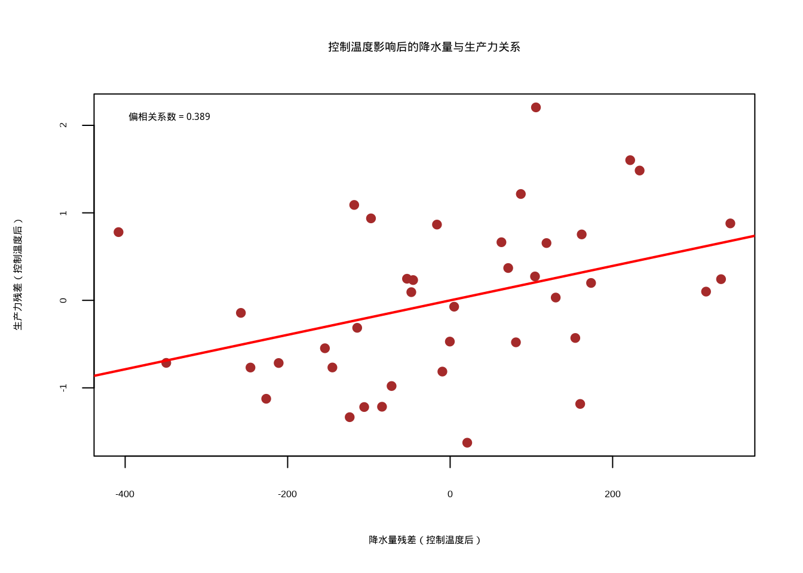
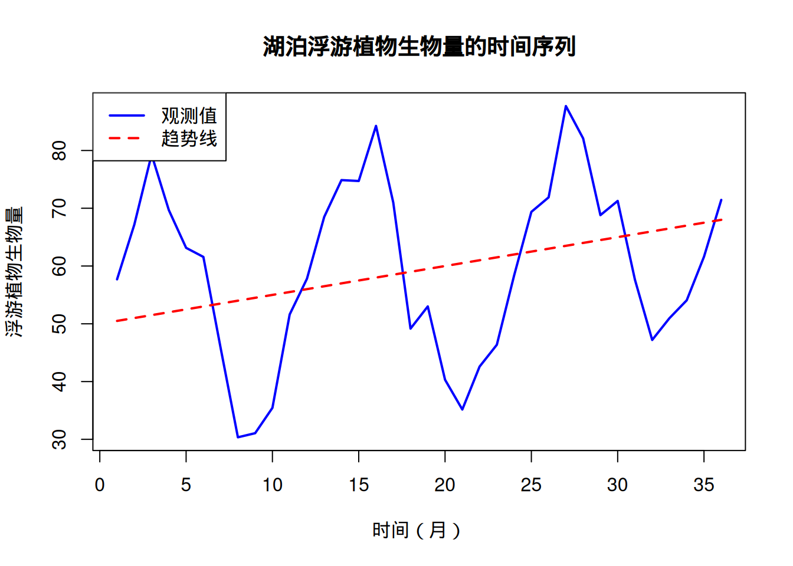

5 相关性与相似性
5.1 引言
在生态学研究中，我们常常面临一个根本性的问题：自然界中的各种现象之间存在着怎样的联系？这种对关系的探索构成了生态学研究的核心任务之一。在前面的章节中，我们学习了如何通过统计量和参数估计来描述生态系统的特征，如种群数量、物种多样性等。然而，生态学的真正魅力在于揭示这些特征之间的内在联系——环境因子如何影响物种分布？物种之间如何相互作用？群落结构如何响应环境变化？这些问题的答案往往隐藏在变量间的相关性或相似性之中。
相关性与相似性分析正是帮助我们揭示这些生态关系的重要统计工具。作为生态统计学的重要组成部分，这一章节将带领大家从描述生态系统特征转向理解生态系统关系，这是生态学研究从现象描述到规律发现的关键跨越。对于生态学本科生而言，掌握相关性与相似性分析方法不仅能够提升研究能力，更重要的是培养一种关系思维——学会从相互联系的角度来理解复杂的生态系统。
为什么生态学专业的学生需要学习相关性与相似性？首先，生态系统的本质是一个由无数相互关联的组分构成的复杂网络。从微观的基因表达关系到宏观的物种分布格局，从短期的种群动态到长期的气候变化响应，相关性分析为我们提供了量化这些关系的数学语言。例如，通过相关性分析，我们可以确定温度变化与物种丰富度之间的关系强度，或者评估不同环境因子对群落结构的相对重要性。这种量化关系的能力是现代生态学研究的基本要求。
其次，相似性分析在生态学中具有广泛的应用价值。当我们研究不同群落的物种组成时，需要量化它们之间的相似程度；当我们分析功能性状的协变模式时，需要评估性状间的相似性关系；当我们构建生态网络时，需要基于相似性来识别物种间的相互作用。相似性分析不仅帮助我们理解生态系统的结构特征，还为保护生物学中的优先区识别、生态恢复中的参考系统选择提供了科学依据。
本章节的内容安排遵循从基础到应用、从简单到复杂的学习路径。我们将首先介绍相关性统计的基础知识，包括Pearson相关系数、Spearman秩相关、Kendall’s τ等常用方法，以及它们在生态学中的具体应用场景。这些基础方法构成了理解变量间线性关系和单调关系的基础框架。随后，我们将深入探讨更复杂的相关性概念，如偏相关分析如何帮助我们识别变量间的直接关系，距离相关如何检测非线性依赖模式，以及互信息如何基于信息论来量化变量间的信息共享。
自相关分析是本章的另一个重要组成部分，它专门处理具有时间或空间依赖性的生态数据。时间自相关分析帮助我们理解生态过程的时间动态，如种群波动的周期性、环境因子的记忆效应等；空间自相关分析则揭示了生态现象的空间格局，如物种分布的空间聚集、环境异质性的空间结构等。此外，我们还将介绍系统发育相关性分析，这种方法在进化生态学和比较生物学中具有重要地位，帮助我们理解性状的系统发育保守性和生态适应机制。
相似性与距离度量构成了本章的后半部分内容。我们将系统介绍常用的相似性系数，如Jaccard系数、Sørensen系数用于二元数据，Bray-Curtis距离、Morisita-Horn指数用于数量数据，以及欧氏距离、Mahalanobis距离等距离度量方法。这些方法为比较不同生态实体（如群落、个体、功能性状）提供了量化工具。特别地，我们将探讨功能性状间相关性的生态学意义，包括性状权衡关系、功能性状的协变模式，以及经济型谱理论在理解植物功能策略中的应用。
种内相关性和种间相关性分析将帮助我们理解生物个体和物种间的空间分布模式和相互作用关系。通过聚集指数、种间关联分析等方法，我们可以量化种内空间分布模式、识别物种间的正负相关关系，为理解群落构建机制提供证据。最后，群落相似性分析将整合前面学到的各种方法，通过Mantel检验、排序分析、聚类分析和Beta多样性分析，全面揭示群落结构的空间格局和环境梯度响应。
学习相关性与相似性分析不仅是为了掌握一套统计工具，更重要的是培养一种系统思维的能力。在生态学研究中，很少有现象是孤立存在的，理解它们之间的相互关系往往比理解单个现象本身更为重要。通过本章的学习，希望大家能够建立起从关系角度思考生态问题的习惯，学会用统计语言来描述和验证生态假说，为未来的生态学研究和保护实践奠定坚实的统计基础。
5.2 相关性统计基础
在生态学研究中，我们经常需要探索不同变量之间的关系。例如，我们可能想知道：森林中树木的胸径与树高之间是否存在某种关系？降水量与植物多样性之间有何联系？这些问题的答案往往需要通过相关性分析来获得。相关性分析为我们提供了一种量化变量间关系强度和方向的统计工具。
5.2.1 相关分析
5.2.1.1 Pearson相关系数：线性关系的度量
假设我们正在研究一片温带森林中树木的胸径与树高的关系。我们测量了50棵树的胸径（cm）和树高（m），想要了解这两个变量之间是否存在线性关系。
Pearson相关系数是统计学中最为经典和广泛使用的线性相关性度量方法，由英国统计学家卡尔·皮尔逊于1895年提出。这种方法专门用于量化两个连续变量之间的线性关系强度和方向。其核心思想是通过计算两个变量的协方差与各自标准差的乘积之比来标准化协方差的大小，从而得到一个无量纲的相关系数。Pearson相关系数的取值范围严格限定在-1到1之间，其中正值表示正相关关系，即当一个变量增加时另一个变量也倾向于增加；负值表示负相关关系，即当一个变量增加时另一个变量倾向于减少；而0值则表示两个变量之间不存在线性相关关系。值得注意的是，Pearson相关系数只能检测线性关系，对于非线性关系可能会给出接近0的值，即使变量间存在强烈的非线性关联。这种方法对异常值比较敏感，且要求数据大致满足正态分布假设。在生态学研究中，Pearson相关系数常用于分析环境梯度与生物响应之间的线性趋势，如温度与物种丰富度的关系、土壤养分与植物生长的关系等。然而，生态学家需要谨慎使用这种方法，因为许多生态关系本质上是非线性的，过度依赖Pearson相关系数可能会导致对生态关系的错误理解。此外，Pearson相关系数只能反映变量间的统计关联，不能证明因果关系，这在复杂的生态系统中尤为重要。
数学定义：对于两个变量\(X\)和\(Y\)，Pearson相关系数\(r\)定义为：
\[r = \frac{\sum_{i=1}^{n}(X_i - \bar{X})(Y_i - \bar{Y})}{\sqrt{\sum_{i=1}^{n}(X_i - \bar{X})^2}\sqrt{\sum_{i=1}^{n}(Y_i - \bar{Y})^2}}\]
其中\(n\)是样本量，\(\bar{X}\)和\(\bar{Y}\)分别是\(X\)和\(Y\)的样本均值。
R代码实现：
# Pearson相关系数示例：树木胸径与树高的关系
set.seed(123)
# 模拟树木数据
n_trees <- 50
dbh <- rnorm(n_trees, mean = 25, sd = 5) # 胸径(cm)
height <- 2 + 0.3 * dbh + rnorm(n_trees, mean = 0, sd = 2) # 树高(m)
# 计算Pearson相关系数
pearson_cor <- cor(dbh, height, method = "pearson")
cat("Pearson相关系数：", round(pearson_cor, 3), "\n")
# 可视化散点图
plot(dbh, height, pch = 19, col = "blue",
xlab = "胸径 (cm)", ylab = "树高 (m)",
main = "树木胸径与树高的关系")
abline(lm(height ~ dbh), col = "red", lwd = 2)
legend("topleft", legend = paste("r =", round(pearson_cor, 3)),
bty = "n")
# 进行相关性检验
cor_test <- cor.test(dbh, height, method = "pearson")
cat("相关性检验结果：\n")
cat("t统计量：", round(cor_test$statistic, 3), "\n")
cat("p值：", format.pval(cor_test$p.value, digits = 3), "\n")
cat("95%置信区间：[", round(cor_test$conf.int[1], 3),
",", round(cor_test$conf.int[2], 3), "]\n")生态学意义：Pearson相关系数在生态学中广泛应用于量化环境因子与生物响应之间的关系，如温度与物种丰富度的关系、养分浓度与植物生长的关系等。
5.2.1.2 Spearman秩相关：单调关系的度量
在研究河流水质与底栖动物多样性的关系时，我们发现两者之间的关系可能不是严格的线性关系，但存在明显的单调趋势——水质越好，多样性越高。
Spearman秩相关系数是一种基于秩次的非参数相关性度量方法，由英国心理学家查尔斯·斯皮尔曼于1904年提出。与Pearson相关系数专注于线性关系不同，Spearman相关专门用于检测变量间的单调关系——即当一个变量增加时，另一个变量也倾向于增加（正单调关系）或减少（负单调关系），无论这种关系是线性的还是非线性的。这种方法的独特之处在于它完全基于变量的秩次信息，而不是原始数值大小，这使得它对异常值具有天然的鲁棒性。在计算Spearman相关系数时，我们首先将每个变量的观测值转换为秩次（即按大小排序后的位置），然后计算这些秩次之间的Pearson相关系数。这种转换过程相当于对数据进行了一种非线性变换，使得Spearman相关能够捕捉任何形式的单调关系，包括指数关系、对数关系、幂律关系等常见的生态学关系模式。
Spearman相关系数的取值范围与Pearson相关系数相同，都在-1到1之间。正值表示正单调关系，负值表示负单调关系，0值表示没有单调关系。值得注意的是，Spearman相关系数度量的是变量间关系的单调性强度，而不是线性强度。这意味着即使两个变量之间存在强烈的非线性单调关系，Spearman相关也能给出接近1或-1的值，而Pearson相关在这种情况下可能给出接近0的值。在生态学研究中，这种特性使得Spearman相关特别适用于分析等级数据、存在异常值的数据、或者分布未知的数据。例如，在分析环境梯度对物种分布的影响时，许多生态响应关系本质上是单调但非线性的，如物种丰富度随海拔或纬度的变化、生物量随养分浓度的变化等。此外，Spearman相关对数据的分布形式没有严格要求，不要求变量满足正态分布假设，这使其在处理生态学中常见的偏态分布数据时具有明显优势。然而，生态学家需要注意，Spearman相关只能检测单调关系，对于非单调的复杂关系（如U型关系、周期性关系）仍然无法有效识别。
数学定义：对于两个变量\(X\)和\(Y\)，Spearman相关系数\(\rho\)定义为：
\[\rho = 1 - \frac{6\sum_{i=1}^{n}d_i^2}{n(n^2-1)}\]
其中\(d_i\)是第\(i\)个观测在\(X\)和\(Y\)上的秩次差，\(n\)是样本量。
R代码实现：
# Spearman秩相关示例：河流水质与底栖动物多样性
set.seed(123)
# 模拟河流数据
n_rivers <- 30
water_quality <- runif(n_rivers, 0, 100) # 水质指数（0-100）
# 模拟单调但非线性的关系
macroinvertebrate_diversity <- 10 + 0.5 * water_quality +
0.01 * water_quality^2 +
rnorm(n_rivers, 0, 5)
# 计算Spearman相关系数
spearman_cor <- cor(water_quality, macroinvertebrate_diversity, method = "spearman")
cat("Spearman相关系数：", round(spearman_cor, 3), "\n")
# 可视化关系
plot(water_quality, macroinvertebrate_diversity, pch = 19, col = "darkgreen",
xlab = "水质指数", ylab = "底栖动物多样性",
main = "河流水质与底栖动物多样性的关系")
lines(lowess(water_quality, macroinvertebrate_diversity), col = "red", lwd = 2)
legend("topleft", legend = paste("ρ =", round(spearman_cor, 3)),
bty = "n")
# 进行相关性检验
spearman_test <- cor.test(water_quality, macroinvertebrate_diversity, method = "spearman")
cat("Spearman检验p值：", format.pval(spearman_test$p.value, digits = 3), "\n")生态学意义：Spearman相关特别适用于生态学中常见的等级数据或存在异常值的情况，如物种丰富度的排序比较、环境梯度的响应分析等。
5.2.1.3 Kendall’s τ：基于一致对的比例
在研究鸟类迁徙时间与气温变化的关系时，我们想要一个对异常值不敏感的相关性度量，因为个别极端天气事件可能影响整体趋势的判断。
Kendall’s τ（tau）是另一种基于秩次的非参数相关性度量方法，由英国统计学家莫里斯·肯德尔于1938年提出。与Spearman相关类似，Kendall’s τ也用于度量变量间的单调关系，但其计算原理和统计性质有所不同。Kendall’s τ的核心思想是基于数据对的一致性来评估变量间的关系强度。具体而言，它考察所有可能的数据对（共\(\frac{1}{2}n(n-1)\)对），统计其中一致对和不一致对的数量。一致对是指当\(X_i < X_j\)时\(Y_i < Y_j\)，或者当\(X_i > X_j\)时\(Y_i > Y_j\)的数据对，即两个变量在排序上保持一致；不一致对则是指排序相反的数据对。Kendall’s τ的计算公式反映了这种一致对与不一致对的净比例，其取值范围在-1到1之间，与Pearson和Spearman相关系数相同。
Kendall’s τ的一个重要特点是其对异常值的极端稳健性。由于它只关注数据对的相对排序而不关心具体的数值大小，单个异常值对整体估计的影响非常有限。这种特性使得Kendall’s τ特别适用于生态学中常见的小样本研究、存在测量误差的数据、或者包含极端观测值的情况。例如，在气候变化对物候影响的研究中，个别异常温暖的年份可能会显著影响Pearson相关系数的估计，但对Kendall’s τ的影响相对较小。另一个重要优势是Kendall’s τ具有更直观的概率解释：当Kendall’s τ等于0.6时，可以理解为任意随机选择的一对观测值，它们在这两个变量上具有一致排序的概率比不一致排序的概率高60%。这种概率解释在生态学应用中往往比相关系数本身更容易理解和传达。此外，Kendall’s τ的抽样分布在小样本情况下更加稳定，其标准误的计算也比Spearman相关更为精确。然而，Kendall’s τ的计算复杂度较高，对于大样本数据计算时间较长，这是其在实际应用中的一个局限。在生态学研究中，Kendall’s τ特别适用于时间序列分析、物种对环境梯度的响应研究、以及需要处理等级数据或存在大量结（ties）的情况。
数学定义：对于两个变量\(X\)和\(Y\)，Kendall’s τ定义为：
\[\tau = \frac{(一致对的数量) - (不一致对的数量)}{\frac{1}{2}n(n-1)}\]
其中一致对是指当\(X_i < X_j\)时\(Y_i < Y_j\)，或者当\(X_i > X_j\)时\(Y_i > Y_j\)的数据对。
R代码实现：
# Kendall's τ示例：鸟类迁徙时间与气温变化
set.seed(123)
# 模拟迁徙数据
n_years <- 25
spring_temperature <- rnorm(n_years, mean = 15, sd = 3) # 春季平均温度
# 添加一个异常值
spring_temperature[10] <- 25 # 异常温暖的年份
arrival_date <- 100 - 2 * spring_temperature + rnorm(n_years, 0, 5) # 到达日期（儒略日）
# 计算Kendall's τ
kendall_tau <- cor(spring_temperature, arrival_date, method = "kendall")
cat("Kendall's τ：", round(kendall_tau, 3), "\n")
# 比较不同方法的结果
pearson_comp <- cor(spring_temperature, arrival_date, method = "pearson")
spearman_comp <- cor(spring_temperature, arrival_date, method = "spearman")
cat("不同相关性系数的比较：\n")
cat("Pearson：", round(pearson_comp, 3), "\n")
cat("Spearman：", round(spearman_comp, 3), "\n")
cat("Kendall's τ：", round(kendall_tau, 3), "\n")
# 可视化数据
plot(spring_temperature, arrival_date, pch = 19, col = "purple",
xlab = "春季平均温度 (°C)", ylab = "鸟类到达日期（儒略日）",
main = "气温变化与鸟类迁徙时间的关系")
points(spring_temperature[10], arrival_date[10], pch = 17, col = "red", cex = 1.5)
legend("topright", legend = c("正常数据", "异常值"),
pch = c(19, 17), col = c("purple", "red"))生态学意义：Kendall’s τ在小样本或存在异常值的情况下表现稳定，适用于生态时间序列分析、物种对环境变化的响应研究等。
5.2.2 偏相关分析
在研究森林生产力与降水量的关系时，我们发现温度也可能同时影响这两个变量。为了了解降水量对生产力的直接影响，我们需要控制温度的影响。
偏相关分析是一种重要的统计技术，用于在控制其他变量（称为控制变量或协变量）的影响后，评估两个变量之间的净相关关系。在生态学研究中，变量间的关系往往受到多种环境因子的共同影响，简单的双变量相关分析可能无法揭示变量间的真实关系。偏相关分析通过数学方法”剥离”控制变量的影响，使我们能够更准确地评估目标变量间的直接关系。这种方法的理论基础可以追溯到20世纪初，但直到多元统计方法的发展才在生态学中得到广泛应用。偏相关分析的核心思想是：如果两个变量\(X\)和\(Y\)都与第三个变量\(Z\)相关，那么\(X\)和\(Y\)之间的简单相关可能部分或完全由它们与\(Z\)的共同关系所驱动。通过控制\(Z\)的影响，我们可以得到\(X\)和\(Y\)之间的”纯净”相关，即排除了\(Z\)的混淆效应后的直接关系。
偏相关系数的计算基于残差分析的思想。具体而言，我们首先通过线性回归分别从\(X\)和\(Y\)中去除\(Z\)的影响，得到两个残差序列，然后计算这两个残差序列之间的相关系数。这个相关系数就是\(X\)和\(Y\)在控制\(Z\)后的偏相关系数。从数学上看，偏相关系数可以理解为在保持\(Z\)不变的情况下，\(X\)和\(Y\)之间的条件相关。在生态学应用中，偏相关分析具有极其重要的价值。例如，在研究森林生产力与降水量的关系时，温度可能同时影响这两个变量——温度较高时通常降水量也较多，同时温度本身也直接影响植物的光合作用效率。如果不控制温度的影响，我们可能会高估降水量对生产力的直接作用。偏相关分析能够帮助我们识别这种”伪相关”或”间接相关”，从而更准确地理解生态系统的内在机制。此外，偏相关分析在生态网络构建、物种相互作用分析、环境因子筛选等复杂生态学问题中都有广泛应用。然而，生态学家需要注意，偏相关分析仍然基于线性关系的假设，且要求控制变量与目标变量之间的关系大致满足线性模型的前提条件。在高度非线性的生态系统中，偏相关分析的结果需要谨慎解释。
数学定义：对于变量\(X\)、\(Y\)和控制变量\(Z\)，\(X\)和\(Y\)在控制\(Z\)后的偏相关系数为：
\[r_{XY.Z} = \frac{r_{XY} - r_{XZ}r_{YZ}}{\sqrt{(1-r_{XZ}^2)(1-r_{YZ}^2)}}\]
其中\(r_{XY}\)、\(r_{XZ}\)、\(r_{YZ}\)分别是相应的Pearson相关系数。
R代码实现：
# 偏相关分析示例：森林生产力与降水量的关系
set.seed(123)
# 模拟森林生态系统数据
n_plots <- 40
precipitation <- rnorm(n_plots, mean = 1000, sd = 200) # 年降水量(mm)
temperature <- rnorm(n_plots, mean = 15, sd = 3) # 年平均温度(°C)
# 生产力同时受降水和温度影响
productivity <- 5 + 0.002 * precipitation + 0.3 * temperature + rnorm(n_plots, 0, 1)
# 计算简单相关系数
simple_cor <- cor(precipitation, productivity)
cat("降水量与生产力的简单相关系数：", round(simple_cor, 3), "\n")
# 计算偏相关系数（控制温度影响）
library(ppcor) # 需要安装：install.packages("ppcor")
# 创建数据框
eco_data <- data.frame(precipitation, temperature, productivity)
partial_cor <- pcor(eco_data)$estimate
cat("偏相关系数矩阵：\n")
print(round(partial_cor, 3))
cat("\n控制温度后，降水量与生产力的偏相关系数：",
round(partial_cor["precipitation", "productivity"], 3), "\n")
# 可视化偏相关关系
# 使用残差法展示偏相关
resid_precip <- resid(lm(precipitation ~ temperature))
resid_prod <- resid(lm(productivity ~ temperature))
plot(resid_precip, resid_prod, pch = 19, col = "brown",
xlab = "降水量残差（控制温度后）",
ylab = "生产力残差（控制温度后）",
main = "控制温度影响后的降水量与生产力关系")
abline(lm(resid_prod ~ resid_precip), col = "red", lwd = 2)
legend("topleft",
legend = paste("偏相关系数 =",
round(partial_cor["precipitation", "productivity"], 3)),
bty = "n")生态学意义：偏相关分析在生态学中非常重要，因为它能帮助识别变量间的直接因果关系，排除混杂变量的影响，在复杂的生态系统研究中尤为有用。
5.2.3 距离相关
在研究植物功能性状之间的关系时，我们可能发现某些性状间存在复杂的非线性关系，传统的线性相关方法无法有效捕捉这些模式。
距离相关是一种革命性的非参数相关性度量方法，由统计学家Gábor J. Székely等人于2007年提出，它能够检测任意分布变量间的依赖关系，包括线性和非线性关系。与传统的相关性度量方法不同，距离相关不依赖于变量间的线性或单调关系假设，而是基于变量间距离的协方差来度量相关性。这种方法的独特之处在于它能够检测任何形式的统计依赖关系，只要这种依赖关系在概率意义上是存在的。距离相关的核心概念是距离协方差和距离方差，这些概念扩展了传统的协方差和方差概念，使其能够捕捉更复杂的依赖模式。距离协方差度量的是两个变量在距离空间中的协同变化程度，而距离方差则度量单个变量在距离空间中的变异程度。
距离相关系数的取值范围在0到1之间，其中0表示变量间完全独立，1表示变量间存在确定的函数关系。值得注意的是，距离相关具有一个非常重要的性质：当且仅当两个变量相互独立时，距离相关系数等于0。这一性质使得距离相关成为检验变量独立性的有力工具。在生态学研究中，这种特性具有重要的应用价值。许多生态关系本质上是非线性的，如物种-面积关系、功能性状权衡、种群动态模型等，传统的线性相关方法往往无法充分描述这些复杂模式。距离相关能够有效捕捉这些非线性关系，为生态学家提供了更全面的分析工具。例如，在分析植物功能性状间的关系时，我们可能发现叶面积与比叶重之间存在U型关系——中等大小的叶片具有最高的比叶重，而过大或过小的叶片比叶重较低。这种复杂的非线性关系用Pearson或Spearman相关可能无法有效检测，但距离相关能够给出显著的非零值。此外，距离相关对变量的分布形式没有要求，适用于连续变量、离散变量甚至混合类型的数据，这使其在处理生态学中常见的复杂数据类型时具有明显优势。然而，生态学家需要注意，距离相关的计算复杂度较高，对于大样本数据可能需要较长的计算时间，且其统计性质在小样本情况下的表现仍需谨慎评估。
数学定义：对于两个变量\(X\)和\(Y\)，距离相关系数定义为：
\[dCor(X,Y) = \frac{dCov(X,Y)}{\sqrt{dVar(X)dVar(Y)}}\]
其中\(dCov\)是距离协方差，\(dVar\)是距离方差。
R代码实现：
# 距离相关示例：植物功能性状间的关系
set.seed(123)
# 模拟植物功能性状数据
n_plants <- 50
leaf_area <- rnorm(n_plants, mean = 20, sd = 5) # 叶面积(cm²)
# 模拟非线性关系：比叶重与叶面积的U型关系
specific_leaf_area <- 150 + 0.5 * (leaf_area - 20)^2 + rnorm(n_plants, 0, 10)
# 计算距离相关
library(energy) # 需要安装：install.packages("energy")
dcor_result <- dcor(leaf_area, specific_leaf_area)
cat("距离相关系数：", round(dcor_result, 3), "\n")
# 比较不同相关性方法
pearson_dc <- cor(leaf_area, specific_leaf_area, method = "pearson")
spearman_dc <- cor(leaf_area, specific_leaf_area, method = "spearman")
cat("不同相关性方法的比较：\n")
cat("Pearson相关系数：", round(pearson_dc, 3), "\n")
cat("Spearman相关系数：", round(spearman_dc, 3), "\n")
cat("距离相关系数：", round(dcor_result, 3), "\n")
# 可视化非线性关系
plot(leaf_area, specific_leaf_area, pch = 19, col = "darkgreen",
xlab = "叶面积 (cm²)", ylab = "比叶重 (g/m²)",
main = "植物功能性状间的非线性关系")
# 添加局部回归曲线
lines(lowess(leaf_area, specific_leaf_area), col = "red", lwd = 2)
# 添加二次拟合曲线
quad_fit <- lm(specific_leaf_area ~ poly(leaf_area, 2))
leaf_seq <- seq(min(leaf_area), max(leaf_area), length.out = 100)
pred_quad <- predict(quad_fit, newdata = data.frame(leaf_area = leaf_seq))
lines(leaf_seq, pred_quad, col = "blue", lwd = 2, lty = 2)
legend("top", legend = c("观测数据", "局部回归", "二次拟合"),
col = c("darkgreen", "red", "blue"),
pch = c(19, NA, NA), lty = c(NA, 1, 2), lwd = 2)生态学意义：距离相关特别适用于生态学中常见的复杂非线性关系，如物种-面积关系、功能性状权衡、种群动态模型等。
5.2.4 互信息
在研究环境因子对物种分布的联合影响时，我们想要量化多个环境变量共同包含的关于物种分布的信息量。
互信息是基于信息论的依赖关系度量，它量化了两个变量间共享的信息量。与传统的相关性不同，互信息能够捕捉任何类型的统计依赖关系。互信息的概念源于信息论，由克劳德·香农在1948年提出，最初用于通信系统中的信息传输研究，后来被广泛应用于统计分析和机器学习领域。互信息的核心思想是衡量知道一个变量的值能够减少另一个变量不确定性的程度。从信息论的角度来看，如果两个变量完全独立，那么知道其中一个变量的值不会提供关于另一个变量的任何信息，此时互信息为零；如果两个变量存在完全确定的函数关系，那么知道一个变量的值就能完全确定另一个变量，此时互信息达到最大值。
互信息的一个重要特性是它对变量间关系的类型没有限制，能够检测线性和非线性关系、单调和非单调关系，甚至是复杂的多模态关系。这种普适性使得互信息在生态学研究中具有独特的优势，因为许多生态关系本质上是非线性和复杂的。例如，在研究环境因子对物种分布的影响时，物种对环境梯度的响应往往不是简单的线性关系，而是存在阈值效应、饱和效应或最优区间等复杂模式。互信息能够有效捕捉这些复杂的依赖关系，而传统的线性相关方法可能会遗漏重要的生态信息。
另一个重要特点是互信息对变量的分布形式没有严格要求，适用于连续变量、离散变量甚至混合类型的数据。在生态学中，我们经常需要处理不同类型的数据，如连续的环境变量（温度、降水）、离散的分类变量（生境类型、土壤类型）和二元变量（物种出现/缺失）。互信息提供了一个统一的框架来处理这些不同类型变量间的依赖关系。此外，互信息具有对称性，即\(I(X;Y) = I(Y;X)\)，这反映了变量间信息共享的相互性。互信息的取值范围从0到正无穷，其中0表示变量间完全独立，正值表示存在信息共享。为了便于解释，有时会将互信息标准化到[0,1]区间，如通过除以变量的熵来得到标准化互信息。在生态学应用中，互信息特别适合用于特征选择、生态网络构建、物种分布建模等需要处理复杂非线性关系的场景。
数学定义：对于两个离散随机变量\(X\)和\(Y\)，互信息定义为：
\[I(X;Y) = \sum_{x\in X}\sum_{y\in Y} p(x,y) \log\left(\frac{p(x,y)}{p(x)p(y)}\right)\]
对于连续变量，需要使用积分形式。
R代码实现：
# 互信息示例：环境因子与物种分布的依赖关系
set.seed(123)
# 模拟环境数据和物种出现数据
n_sites <- 100
temperature <- rnorm(n_sites, mean = 20, sd = 5) # 温度
precipitation <- rnorm(n_sites, mean = 800, sd = 200) # 降水量
# 物种出现概率与环境因子的复杂关系
species_prob <- plogis(0.1 * temperature + 0.002 * precipitation -
0.0001 * temperature * precipitation - 15)
species_presence <- rbinom(n_sites, size = 1, prob = species_prob)
# 计算互信息
library(infotheo) # 需要安装：install.packages("infotheo")
# 离散化连续变量（互信息计算需要离散数据）
temp_disc <- discretize(temperature, disc = "equalfreq", nbins = 5)
precip_disc <- discretize(precipitation, disc = "equalfreq", nbins = 5)
# 计算互信息
mi_temp <- mutinformation(temp_disc, species_presence)
mi_precip <- mutinformation(precip_disc, species_presence)
mi_joint <- mutinformation(cbind(temp_disc, precip_disc), species_presence)
cat("互信息分析结果：\n")
cat("温度与物种出现的互信息：", round(mi_temp, 3), "\n")
cat("降水量与物种出现的互信息：", round(mi_precip, 3), "\n")
cat("温度与降水量联合与物种出现的互信息：", round(mi_joint, 3), "\n")
# 可视化物种出现与环境因子的关系
par(mfrow = c(1, 2))
# 温度与物种出现
plot(temperature, species_presence, pch = 19, col = alpha("blue", 0.6),
xlab = "温度 (°C)", ylab = "物种出现 (0/1)",
main = "温度与物种出现的关系")
# 添加逻辑回归曲线
temp_seq <- seq(min(temperature), max(temperature), length.out = 100)
logit_fit <- glm(species_presence ~ temperature, family = binomial)
pred_prob <- predict(logit_fit, newdata = data.frame(temperature = temp_seq),
type = "response")
lines(temp_seq, pred_prob, col = "red", lwd = 2)
# 降水量与物种出现
plot(precipitation, species_presence, pch = 19, col = alpha("green", 0.6),
xlab = "降水量 (mm)", ylab = "物种出现 (0/1)",
main = "降水量与物种出现的关系")
# 添加逻辑回归曲线
precip_seq <- seq(min(precipitation), max(precipitation), length.out = 100)
logit_fit2 <- glm(species_presence ~ precipitation, family = binomial)
pred_prob2 <- predict(logit_fit2, newdata = data.frame(precipitation = precip_seq),
type = "response")
lines(precip_seq, pred_prob2, col = "red", lwd = 2)
par(mfrow = c(1, 1))生态学意义：互信息在生态学中广泛应用于特征选择、生态网络构建、物种分布建模等领域，特别适合处理复杂的非线性关系和分类数据。
5.2.5 非线性关系度量
生态系统中许多关系都是非线性的，如物种-面积关系、剂量-响应关系、种群增长模型等。传统的线性相关方法往往无法充分描述这些复杂模式。
非线性关系度量包括前面介绍的距离相关、互信息等方法，它们不依赖于线性假设，能够捕捉各种复杂的关系模式。在生态学研究中，非线性关系比线性关系更为普遍，因为生态系统中的许多过程都涉及阈值效应、饱和效应、最优区间和反馈机制等非线性动态。例如，物种-面积关系通常呈现幂律形式，种群增长遵循逻辑斯蒂曲线，功能性状间的权衡关系可能呈现U型或S型模式，物种对环境梯度的响应往往存在最优区间。这些复杂的非线性模式无法用传统的线性相关方法来充分描述，因此需要专门的非线性关系度量方法。
距离相关和互信息是两种主要的非线性关系度量方法，它们各有特点和适用场景。距离相关基于变量在距离空间中的协方差来度量依赖关系，能够检测任何形式的统计依赖，包括线性和非线性关系。它的一个重要性质是当且仅当两个变量相互独立时，距离相关系数等于零，这使其成为检验变量独立性的有力工具。距离相关对变量的分布形式没有要求，适用于连续变量和混合类型的数据，但在计算复杂度上相对较高，特别是对于大样本数据。
互信息则基于信息论的概念，量化两个变量间共享的信息量。它能够检测任何类型的统计依赖关系，包括线性和非线性关系、单调和非单调关系。互信息的一个重要优势是它对变量的数据类型没有限制，可以处理连续变量、离散变量和分类变量，这使其特别适合生态学中常见的混合数据类型分析。此外，互信息具有清晰的信息论解释，能够提供关于变量间信息共享程度的直观理解。
除了距离相关和互信息，还有其他非线性关系度量方法，如基于核的方法、基于图的方法和基于模型的方法。基于核的方法通过将数据映射到高维特征空间来检测非线性关系，基于图的方法通过构建变量间的图结构来识别依赖关系，基于模型的方法则通过拟合非线性模型来量化关系强度。在生态学实践中，选择哪种非线性关系度量方法需要考虑数据的特征、研究的目的和计算资源的限制。通常建议使用多种方法进行比较，以获得对生态关系更全面和稳健的认识。
R代码实现：
# 非线性关系度量综合示例
set.seed(123)
# 模拟不同类型的非线性关系
n_obs <- 100
x <- seq(0, 10, length.out = n_obs)
# 1. 二次关系（U型）
y_quadratic <- 2 + 0.5 * x - 0.1 * x^2 + rnorm(n_obs, 0, 0.5)
# 2. 指数关系
y_exponential <- exp(0.3 * x) + rnorm(n_obs, 0, 2)
# 3. 周期性关系
y_periodic <- 5 + 2 * sin(0.8 * x) + rnorm(n_obs, 0, 0.5)
# 计算不同相关性度量
cor_methods <- function(x, y) {
results <- list()
results$pearson <- cor(x, y, method = "pearson")
results$spearman <- cor(x, y, method = "spearman")
results$kendall <- cor(x, y, method = "kendall")
# 距离相关
if (require(energy)) {
results$dcor <- dcor(x, y)
}
return(results)
}
# 分析三种非线性关系
cat("二次关系的相关性分析：\n")
quad_cor <- cor_methods(x, y_quadratic)
print(lapply(quad_cor, round, 3))
cat("\n指数关系的相关性分析：\n")
exp_cor <- cor_methods(x, y_exponential)
print(lapply(exp_cor, round, 3))
cat("\n周期性关系的相关性分析：\n")
period_cor <- cor_methods(x, y_periodic)
print(lapply(period_cor, round, 3))
# 可视化不同类型的非线性关系
par(mfrow = c(2, 2))
# 二次关系
plot(x, y_quadratic, pch = 19, col = "blue",
main = "二次关系 (U型)",
xlab = "X", ylab = "Y")
quad_fit <- lm(y_quadratic ~ poly(x, 2))
lines(x, predict(quad_fit), col = "red", lwd = 2)
# 指数关系
plot(x, y_exponential, pch = 19, col = "green",
main = "指数关系",
xlab = "X", ylab = "Y")
exp_fit <- lm(log(y_exponential) ~ x)
lines(x, exp(predict(exp_fit)), col = "red", lwd = 2)
# 周期性关系
plot(x, y_periodic, pch = 19, col = "purple",
main = "周期性关系",
xlab = "X", ylab = "Y")
period_fit <- lm(y_periodic ~ sin(0.8*x) + cos(0.8*x))
lines(x, predict(period_fit), col = "red", lwd = 2)
# 方法比较图
methods <- c("Pearson", "Spearman", "Kendall", "Distance")
quad_values <- c(quad_cor$pearson, quad_cor$spearman, quad_cor$kendall, quad_cor$dcor)
barplot(quad_values, names.arg = methods, col = rainbow(4),
main = "不同方法在二次关系中的表现",
ylab = "相关系数", ylim = c(0, 1))
par(mfrow = c(1, 1))生态学意义：非线性关系度量方法为生态学家提供了更全面的工具来探索复杂的生态关系。在真实的生态系统中，线性关系往往是特例而非普遍规律，掌握这些非线性分析方法对于准确理解生态过程至关重要。
5.3 自相关
在生态学研究中，许多数据具有时间或空间依赖性，即相邻的观测值之间往往存在某种关联。这种关联性被称为自相关，它反映了生态过程在时间或空间上的连续性。理解自相关对于正确分析生态数据至关重要，因为忽略自相关可能导致统计推断的错误。
5.3.1 时间自相关
时间自相关是指同一变量在不同时间点上的观测值之间的相关性。在生态学中，许多过程都具有时间连续性，如种群动态、气候变化、物候变化等。时间自相关分析帮助我们理解这些过程的动态特征和内在规律。
5.3.1.1 自相关函数（ACF）：时间依赖性的量化
假设我们正在研究一个湖泊中浮游植物生物量的季节变化，我们记录了连续36个月的观测数据，想要了解生物量在不同时间滞后下的自相关性模式。
自相关函数是时间序列分析中最基础的工具之一，用于量化时间序列在不同时间滞后下的自相关性强度。ACF的核心思想是计算时间序列与其自身在不同时间滞后下的相关系数，从而揭示时间序列中的周期性、趋势和记忆效应。对于时间滞后\(k\)，自相关系数\(\rho_k\)定义为时间序列\(X_t\)与\(X_{t+k}\)之间的相关系数。ACF的取值范围在-1到1之间，正值表示正自相关（即高值倾向于跟随高值，低值倾向于跟随低值），负值表示负自相关（即高值倾向于跟随低值，低值倾向于跟随高值），0值表示没有自相关。
在生态学研究中，ACF具有重要的应用价值。例如，在分析种群动态时，显著的正自相关可能表明种群具有惯性效应或密度依赖性调节；显著的负自相关可能表明存在过度补偿机制；周期性模式可能反映季节性波动或多年周期。ACF还能帮助识别时间序列中的趋势成分——如果ACF缓慢衰减，表明存在趋势；如果ACF快速衰减到零，表明序列是平稳的。此外，ACF在构建时间序列模型（如ARIMA模型）时也起着关键作用，它为选择合适的模型阶数提供了重要依据。
数学定义：对于时间序列\(\{X_t\}\)，滞后\(k\)的自相关系数定义为：
\[\rho_k = \frac{\sum_{t=k+1}^{n}(X_t - \bar{X})(X_{t-k} - \bar{X})}{\sum_{t=1}^{n}(X_t - \bar{X})^2}\]
其中\(n\)是时间序列长度，\(\bar{X}\)是序列的样本均值。
R代码实现：
# 自相关函数示例：湖泊浮游植物生物量的季节变化
set.seed(123)
# 模拟湖泊浮游植物生物量数据（36个月）
n_months <- 36
months <- 1:n_months
# 模拟具有季节性和趋势的生物量数据
base_trend <- 50 + 0.5 * months # 基础趋势
seasonal <- 20 * sin(2 * pi * months / 12) # 季节性成分
noise <- rnorm(n_months, 0, 5) # 随机噪声
phytoplankton_biomass <- base_trend + seasonal + noise
# 计算自相关函数
acf_result <- acf(phytoplankton_biomass, lag.max = 20, plot = FALSE)
# 可视化自相关函数
plot(acf_result, main = "浮游植物生物量的自相关函数",
xlab = "滞后（月）", ylab = "自相关系数")
abline(h = 0, lty = 2)
# 提取关键的自相关系数
cat("关键滞后下的自相关系数：\n")
cat("滞后1个月：", round(acf_result$acf[2], 3), "\n")
cat("滞后12个月（年周期）：", round(acf_result$acf[13], 3), "\n")
cat("滞后6个月（半年周期）：", round(acf_result$acf[7], 3), "\n")
# 进行Ljung-Box检验（检验自相关的显著性）
library(stats)
lb_test <- Box.test(phytoplankton_biomass, lag = 10, type = "Ljung-Box")
cat("\nLjung-Box检验结果：\n")
cat("检验统计量：", round(lb_test$statistic, 3), "\n")
cat("p值：", format.pval(lb_test$p.value, digits = 3), "\n")
# 可视化原始时间序列
plot(months, phytoplankton_biomass, type = "l", lwd = 2, col = "blue",
xlab = "时间（月）", ylab = "浮游植物生物量",
main = "湖泊浮游植物生物量的时间序列")
lines(months, base_trend, col = "red", lty = 2, lwd = 2)
legend("topleft", legend = c("观测值", "趋势线"),
col = c("blue", "red"), lty = c(1, 2), lwd = 2)生态学意义：自相关函数在生态学中广泛应用于检测种群波动的周期性、环境因子的记忆效应、生态过程的持续性等时间动态特征。
5.3.1.2 偏自相关函数（PACF）：直接时间依赖的识别
在研究森林年轮宽度的时间序列时，我们想要了解在控制了中间时间滞后的影响后，当前年轮宽度与过去年轮宽度的直接关系，这有助于确定合适的时间序列模型阶数。
偏自相关函数是时间序列分析中的另一个重要工具，它度量了在控制中间时间滞后影响后，时间序列与其自身在特定滞后下的直接相关性。与自相关函数不同，PACF排除了通过中间滞后传递的间接相关性，只保留直接的相关性。这种特性使得PACF在识别时间序列模型的自回归阶数时特别有用。对于滞后\(k\)，偏自相关系数\(\phi_{kk}\)可以理解为在回归模型\(X_t = \phi_1 X_{t-1} + \phi_2 X_{t-2} + \cdots + \phi_k X_{t-k} + \epsilon_t\)中，系数\(\phi_k\)的估计值。
PACF的计算通常基于Yule-Walker方程或通过逐步回归方法实现。在生态学时间序列分析中，PACF的主要作用是帮助确定自回归模型的合适阶数。如果PACF在滞后\(p\)之后截尾（即之后的偏自相关系数不再显著），那么\(p\)阶自回归模型可能是合适的。这种截尾模式为构建ARIMA模型提供了重要依据。例如，在分析气候时间序列时，PACF可以帮助识别气候系统的记忆长度；在分析种群动态时，PACF可以揭示密度依赖调节的时间尺度。
PACF与ACF的结合使用能够提供对时间序列结构的全面理解。ACF反映了总的相关性（包括直接和间接相关性），而PACF只反映直接相关性。这种区别在生态学应用中非常重要，因为它帮助我们区分生态过程中的直接因果联系和通过中间过程传递的间接联系。例如，在食物网动态中，捕食者与猎物的关系可能通过多个营养级传递，PACF可以帮助识别直接的相互作用关系。
数学定义：偏自相关系数\(\phi_{kk}\)可以通过求解Yule-Walker方程得到：
\[\begin{bmatrix} \rho_0 & \rho_1 & \cdots & \rho_{k-1} \\ \rho_1 & \rho_0 & \cdots & \rho_{k-2} \\ \vdots & \vdots & \ddots & \vdots \\ \rho_{k-1} & \rho_{k-2} & \cdots & \rho_0 \end{bmatrix} \begin{bmatrix} \phi_{k1} \\ \phi_{k2} \\ \vdots \\ \phi_{kk} \end{bmatrix} = \begin{bmatrix} \rho_1 \\ \rho_2 \\ \vdots \\ \rho_k \end{bmatrix}\]
其中\(\phi_{kk}\)就是滞后\(k\)的偏自相关系数。
R代码实现：
# 偏自相关函数示例：森林年轮宽度的时间序列
set.seed(123)
# 模拟森林年轮宽度数据（100年）
n_years <- 100
years <- 1:n_years
# 模拟自回归过程：当前年轮宽度受前2年影响
# AR(2)过程：X_t = 0.6*X_{t-1} - 0.3*X_{t-2} + ε_t
tree_ring_width <- numeric(n_years)
tree_ring_width[1] <- rnorm(1, 10, 1)
tree_ring_width[2] <- rnorm(1, 10, 1)
for (t in 3:n_years) {
tree_ring_width[t] <- 0.6 * tree_ring_width[t-1] - 0.3 * tree_ring_width[t-2] + rnorm(1, 0, 1)
}
# 添加趋势和季节性（年际变化）
tree_ring_width <- tree_ring_width + 0.02 * years + 2 * sin(2 * pi * years / 30)
# 计算偏自相关函数
pacf_result <- pacf(tree_ring_width, lag.max = 15, plot = FALSE)
# 可视化偏自相关函数
plot(pacf_result, main = "森林年轮宽度的偏自相关函数",
xlab = "滞后（年）", ylab = "偏自相关系数")
abline(h = 0, lty = 2)
# 提取关键的偏自相关系数
cat("关键滞后下的偏自相关系数：\n")
cat("滞后1年：", round(pacf_result$acf[1], 3), "\n")
cat("滞后2年：", round(pacf_result$acf[2], 3), "\n")
cat("滞后3年：", round(pacf_result$acf[3], 3), "\n")
# 比较ACF和PACF
par(mfrow = c(1, 2))
# ACF图
acf(tree_ring_width, lag.max = 15, main = "自相关函数")
# PACF图
pacf(tree_ring_width, lag.max = 15, main = "偏自相关函数")
par(mfrow = c(1, 1))
# 拟合AR模型并确定最优阶数
library(forecast)
# 使用AIC准则选择最优AR模型阶数
best_ar <- auto.arima(tree_ring_width, max.p = 10, max.q = 0, max.d = 0,
seasonal = FALSE, stepwise = FALSE, approximation = FALSE)
cat("\n最优AR模型阶数：", best_ar$arma[1], "\n")
cat("模型系数：\n")
print(coef(best_ar))
# 可视化原始时间序列
plot(years, tree_ring_width, type = "l", lwd = 2, col = "darkgreen",
xlab = "年份", ylab = "年轮宽度 (mm)",
main = "森林年轮宽度的时间序列")生态学意义：偏自相关函数在生态学中主要用于识别时间序列模型的自回归阶数，帮助理解生态过程的直接时间依赖关系和内在动态机制。
5.3.1.3 时间序列平稳性：分析的基础假设
在分析鸟类种群数量的长期监测数据时，我们需要首先检验时间序列的平稳性，因为非平稳时间序列可能导致伪相关和错误的统计推断。
时间序列平稳性是时间序列分析的基本假设，指的是时间序列的统计特性（如均值、方差和自相关结构）不随时间变化。具体而言，严格平稳要求时间序列的任意有限维联合分布都不随时间平移而改变，而弱平稳（也称为二阶平稳）只要求均值恒定、方差有限且自协方差只依赖于时间差而不依赖于具体时间点。在生态学实践中，我们通常关注弱平稳性，因为它更容易检验且对于大多数时间序列分析方法已经足够。
平稳性检验在生态学时间序列分析中具有至关重要的意义。许多经典的时间序列方法，如自回归模型、移动平均模型和谱分析，都建立在平稳性假设的基础上。如果时间序列是非平稳的，直接应用这些方法可能导致严重的统计问题，如伪回归（spurious regression）和无效的假设检验。生态学中的许多时间序列都表现出非平稳特征，如长期趋势（气候变化导致的温度上升）、季节性变化（物候的季节性波动）、结构性断点（生态系统突变事件）等。
检验时间序列平稳性的常用方法包括图示法、自相关函数分析、单位根检验（如ADF检验、KPSS检验）等。图示法通过观察时间序列图来识别明显的趋势或季节性模式；自相关函数分析通过检查ACF的衰减模式来判断平稳性——平稳时间序列的ACF应该快速衰减到零，而非平稳时间序列的ACF通常衰减缓慢；单位根检验则提供统计检验来正式判断时间序列是否具有单位根（非平稳的标志）。
当发现时间序列非平稳时，通常需要进行差分或变换来使其平稳化。一阶差分可以去除线性趋势，季节性差分可以去除季节性模式，而对数变换或Box-Cox变换可以稳定方差。经过这些处理后的平稳时间序列就可以安全地应用各种时间序列分析方法了。在生态学应用中，理解时间序列的平稳性不仅关系到统计方法的正确使用，也帮助我们识别生态系统的长期变化模式和动态特征。
数学定义：弱平稳时间序列满足：
- \(E[X_t] = \mu\)（常数均值）
- \(Var[X_t] = \sigma^2 < \infty\)（有限常数方差）
- \(Cov[X_t, X_{t+k}] = \gamma_k\)（自协方差只依赖于滞后\(k\)，不依赖于\(t\)）
R代码实现：
# 时间序列平稳性检验示例：鸟类种群数量监测
set.seed(123)
# 模拟鸟类种群数量数据（50年）
n_years <- 50
years <- 1:n_years
# 模拟非平稳时间序列：具有趋势和季节性的种群动态
# 趋势成分：种群总体下降趋势
trend <- 100 - 0.8 * years
# 季节性成分：年际波动
seasonal <- 15 * sin(2 * pi * years / 5)
# 随机成分
random <- cumsum(rnorm(n_years, 0, 2)) # 随机游走，增加非平稳性
bird_population <- trend + seasonal + random + rnorm(n_years, 0, 5)
# 可视化原始时间序列
plot(years, bird_population, type = "l", lwd = 2, col = "brown",
xlab = "年份", ylab = "鸟类种群数量",
main = "鸟类种群数量的时间序列")
# 检验平稳性：ADF检验（Augmented Dickey-Fuller Test）
library(tseries)
adf_test <- adf.test(bird_population)
cat("ADF单位根检验结果：\n")
cat("检验统计量：", round(adf_test$statistic, 3), "\n")
cat("p值：", format.pval(adf_test$p.value, digits = 3), "\n")
cat("原假设：时间序列有单位根（非平稳）\n")
if (adf_test$p.value < 0.05) {
cat("结论：拒绝原假设，时间序列是平稳的\n")
} else {
cat("结论：不能拒绝原假设，时间序列可能是非平稳的\n")
}
# KPSS检验（另一种平稳性检验）
kpss_test <- kpss.test(bird_population)
cat("\nKPSS平稳性检验结果：\n")
cat("检验统计量：", round(kpss_test$statistic, 3), "\n")
cat("p值：", format.pval(kpss_test$p.value, digits = 3), "\n")
cat("原假设：时间序列是平稳的\n")
if (kpss_test$p.value < 0.05) {
cat("结论：拒绝原假设，时间序列是非平稳的\n")
} else {
cat("结论：不能拒绝原假设，时间序列可能是平稳的\n")
}
# 如果非平稳，进行差分处理
if (adf_test$p.value >= 0.05) {
cat("\n进行一阶差分处理...\n")
bird_diff <- diff(bird_population)
# 检验差分后序列的平稳性
adf_diff <- adf.test(bird_diff)
cat("差分后序列的ADF检验：\n")
cat("p值：", format.pval(adf_diff$p.value, digits = 3), "\n")
# 可视化差分前后的对比
par(mfrow = c(2, 2))
# 原始序列
plot(years, bird_population, type = "l", lwd = 2, col = "brown",
main = "原始序列", xlab = "年份", ylab = "种群数量")
# 差分后序列
plot(years[-1], bird_diff, type = "l", lwd = 2, col = "blue",
main = "一阶差分后序列", xlab = "年份", ylab = "差分值")
# 原始序列的ACF
acf(bird_population, main = "原始序列的ACF")
# 差分后序列的ACF
acf(bird_diff, main = "差分后序列的ACF")
par(mfrow = c(1, 1))
}
# 分解时间序列（趋势、季节、随机成分）
if (length(bird_population) >= 2 * 12) { # 需要足够的数据点进行季节性分解
ts_data <- ts(bird_population, frequency = 5) # 假设5年周期
decompose_result <- decompose(ts_data)
plot(decompose_result)
}生态学意义：时间序列平稳性是生态时间序列分析的基本前提，正确的平稳性检验和处理对于避免伪相关、确保统计推断的有效性至关重要，特别是在分析长期生态监测数据和气候变化影响研究时。
5.3.2 空间自相关
空间自相关是指地理空间中相邻位置上的观测值之间的相关性。在生态学中，许多现象都具有空间依赖性，如物种分布、环境因子的空间变异、种群的空间格局等。空间自相关分析帮助我们理解生态现象的空间结构和空间过程。
5.3.2.1 变异函数（Variogram）：空间依赖性的量化
假设我们正在研究一片草原上植物物种丰富度的空间分布，我们在100个样点上测量了物种数，想要了解物种丰富度在空间上的依赖关系如何随距离变化。
变异函数是地统计学中的核心工具，用于量化空间自相关随距离的变化模式。变异函数描述的是空间变量在特定距离下的半方差，即相同距离的观测点对之间差异的期望值的一半。变异函数的核心思想是：在空间上相近的观测值往往比相距较远的观测值更相似，这种相似性随着距离的增加而逐渐减弱，直到达到某个距离后相似性不再随距离变化。变异函数通常通过三个关键参数来描述空间依赖结构：块金值（nugget）、基台值（sill）和变程（range）。块金值代表距离为零时的半方差，反映了测量误差或小尺度变异；基台值代表半方差达到稳定时的值，反映了变量的总空间变异；变程代表空间自相关存在的最大距离，反映了空间依赖性的尺度。
在生态学研究中，变异函数具有广泛的应用价值。例如，在分析物种分布时，变异函数可以帮助识别物种聚集的尺度；在研究环境异质性时，变异函数可以揭示环境因子的空间结构；在生态监测设计中，变异函数可以为确定合适的采样间距提供依据。变异函数的形状也提供了关于空间过程的重要信息：如果变异函数快速上升并达到基台值，表明空间依赖性在较小尺度上存在；如果变异函数缓慢上升，表明空间依赖性在较大尺度上存在；如果变异函数呈现周期性波动，可能反映重复的空间格局。此外，拟合的理论变异函数模型（如球状模型、指数模型、高斯模型等）可以用于空间插值（克里金法）和空间预测。
数学定义：对于空间变量\(Z(\mathbf{s})\)，其中\(\mathbf{s}\)表示空间位置，变异函数定义为：
\[\gamma(\mathbf{h}) = \frac{1}{2}E[(Z(\mathbf{s} + \mathbf{h}) - Z(\mathbf{s}))^2]\]
其中\(\mathbf{h}\)是空间滞后向量，\(E[\cdot]\)表示期望值。
R代码实现：
# 变异函数示例：草原植物物种丰富度的空间分布
set.seed(123)
# 模拟空间数据：100个样点的坐标和物种丰富度
library(gstat)
library(sp)
n_sites <- 100
# 生成随机空间坐标
coords <- data.frame(
x = runif(n_sites, 0, 100),
y = runif(n_sites, 0, 100)
)
# 模拟具有空间自相关的物种丰富度数据
# 使用高斯随机场模拟空间相关性
library(geoR)
# 设置空间相关参数
mean_richness <- 20 # 平均物种丰富度
spatial_range <- 30 # 空间相关范围
spatial_variance <- 25 # 空间方差
# 生成高斯随机场
grf_model <- grf(n = n_sites, grid = "irreg",
coords = as.matrix(coords),
cov.pars = c(spatial_variance, spatial_range),
cov.model = "exponential")
species_richness <- mean_richness + grf_model$data
# 创建空间数据框
spatial_data <- data.frame(coords, richness = species_richness)
coordinates(spatial_data) <- ~x + y
# 计算经验变异函数
variogram_emp <- variogram(richness ~ 1, data = spatial_data)
# 可视化经验变异函数
plot(variogram_emp, main = "物种丰富度的经验变异函数",
xlab = "距离", ylab = "半方差", pch = 19, col = "blue")
# 拟合理论变异函数模型（指数模型）
variogram_fit <- fit.variogram(variogram_emp, model = vgm(25, "Exp", 30, 5))
# 可视化拟合结果
plot(variogram_emp, variogram_fit, main = "变异函数拟合",
xlab = "距离", ylab = "半方差")
# 提取变异函数参数
cat("变异函数参数：\n")
cat("块金值 (nugget)：", variogram_fit$psill[1], "\n")
cat("偏基台值 (partial sill)：", variogram_fit$psill[2], "\n")
cat("基台值 (sill)：", sum(variogram_fit$psill), "\n")
cat("变程 (range)：", variogram_fit$range[2], "\n")
# 可视化空间分布
library(ggplot2)
spatial_df <- as.data.frame(spatial_data)
ggplot(spatial_df, aes(x = x, y = y, color = richness)) +
geom_point(size = 3) +
scale_color_gradient(low = "blue", high = "red") +
labs(title = "植物物种丰富度的空间分布",
x = "X坐标", y = "Y坐标", color = "物种数") +
theme_minimal()
# 进行空间插值（普通克里金法）
library(automap)
# 创建插值网格
grid <- expand.grid(
x = seq(0, 100, length.out = 50),
y = seq(0, 100, length.out = 50)
)
coordinates(grid) <- ~x + y
gridded(grid) <- TRUE
# 执行克里金插值
kriging_result <- autoKrige(richness ~ 1, spatial_data, grid)
# 可视化插值结果
plot(kriging_result)生态学意义：变异函数在生态学中广泛应用于量化空间依赖性的尺度，如物种分布的空间格局、环境异质性的空间结构、种群聚集的空间范围等。
5.3.2.2 空间自相关指数：全局空间模式的检测
在研究森林中树木分布的空间格局时，我们想要了解整个研究区域内树木分布是随机分布、聚集分布还是均匀分布，这需要使用全局空间自相关指数来量化。
空间自相关指数是量化空间数据中自相关程度的统计量，其中最著名的是Moran’s I和Geary’s C。这些指数提供了对全局空间模式的整体度量，帮助我们判断空间数据是否表现出显著的空间自相关。Moran’s I是最常用的全局空间自相关指数，其计算原理类似于Pearson相关系数，但应用于空间邻接关系。Moran’s I的取值范围通常在-1到1之间，正值表示正空间自相关（即相似的值在空间上聚集），负值表示负空间自相关（即相异的值在空间上聚集），0值表示没有空间自相关（即随机分布）。
Geary’s C是另一个重要的全局空间自相关指数，其计算基于相邻观测值之间的差异。与Moran’s I不同，Geary’s C的取值范围在0到2之间，其中0表示完全正空间自相关，1表示没有空间自相关，大于1的值表示负空间自相关。Geary’s C对局部差异更加敏感，而Moran’s I对全局模式更加敏感。在生态学应用中，这两种指数往往结合使用，以提供对空间模式的全面理解。
空间自相关指数的计算需要定义空间权重矩阵，该矩阵量化了不同空间位置之间的邻接关系或空间影响。常见的权重定义方法包括基于距离的权重（如反距离权重）、基于邻接的权重（如queen邻接、rook邻接）和基于核函数的权重。权重矩阵的选择对空间自相关分析的结果有重要影响，需要根据研究的具体背景和空间过程的性质来合理选择。
在生态学研究中，空间自相关指数具有重要的应用价值。例如，在保护生物学中，Moran’s I可以帮助识别物种的热点区域；在景观生态学中，空间自相关分析可以揭示生境破碎化的空间模式；在种群生态学中，这些指数可以量化种群的聚集程度。此外，空间自相关检验还为许多空间统计方法提供了基础，如空间回归模型、空间方差分析等。
数学定义：
- Moran’s I：
\[I = \frac{n}{\sum_{i=1}^{n}\sum_{j=1}^{n}w_{ij}} \cdot \frac{\sum_{i=1}^{n}\sum_{j=1}^{n}w_{ij}(x_i - \bar{x})(x_j - \bar{x})}{\sum_{i=1}^{n}(x_i - \bar{x})^2}\]
其中\(n\)是观测点数，\(x_i\)是第\(i\)个观测值，\(\bar{x}\)是样本均值，\(w_{ij}\)是空间权重。
- Geary’s C：
\[C = \frac{(n-1)}{2\sum_{i=1}^{n}\sum_{j=1}^{n}w_{ij}} \cdot \frac{\sum_{i=1}^{n}\sum_{j=1}^{n}w_{ij}(x_i - x_j)^2}{\sum_{i=1}^{n}(x_i - \bar{x})^2}\]
R代码实现：
# 空间自相关指数示例：森林树木分布的空间格局
set.seed(123)
# 模拟森林树木数据
library(spdep)
n_trees <- 100
# 生成树木坐标（模拟聚集分布）
# 使用聚类过程生成聚集分布的坐标
cluster_centers <- data.frame(
x = runif(5, 0, 100),
y = runif(5, 0, 100)
)
tree_coords <- data.frame(x = numeric(0), y = numeric(0))
for (i in 1:nrow(cluster_centers)) {
n_cluster <- sample(15:25, 1) # 每个簇的树木数量
cluster_trees <- data.frame(
x = rnorm(n_cluster, cluster_centers$x[i], 8),
y = rnorm(n_cluster, cluster_centers$y[i], 8)
)
tree_coords <- rbind(tree_coords, cluster_trees)
}
# 确保总数为n_trees
if (nrow(tree_coords) > n_trees) {
tree_coords <- tree_coords[1:n_trees, ]
} else {
# 添加一些随机分布的树木
n_extra <- n_trees - nrow(tree_coords)
extra_trees <- data.frame(
x = runif(n_extra, 0, 100),
y = runif(n_extra, 0, 100)
)
tree_coords <- rbind(tree_coords, extra_trees)
}
# 模拟树木胸径（具有空间自相关）
# 使用空间平滑过程
coordinates(tree_coords) <- ~x + y
# 创建空间权重矩阵（基于k近邻）
knn_weights <- knn2nb(knearneigh(tree_coords, k = 5))
listw_weights <- nb2listw(knn_weights, style = "W")
# 模拟具有空间自相关的胸径数据
# 使用空间自回归过程
set.seed(123)
spatial_autocorr <- 0.7 # 空间自相关强度
# 生成空间自相关数据
n <- n_trees
W <- listw2mat(listw_weights)
I_minus_rhoW <- diag(n) - spatial_autocorr * W
# 确保矩阵可逆
if (rcond(I_minus_rhoW) > 1e-10) {
tree_dbh <- as.vector(solve(I_minus_rhoW) %*% rnorm(n, 25, 5))
} else {
# 如果矩阵不可逆，使用近似方法
tree_dbh <- 25 + 5 * rnorm(n)
}
# 计算Moran's I
moran_test <- moran.test(tree_dbh, listw_weights)
cat("Moran's I检验结果：\n")
cat("Moran's I统计量：", round(moran_test$estimate[1], 3), "\n")
cat("期望值：", round(moran_test$estimate[2], 3), "\n")
cat("方差：", round(moran_test$estimate[3], 3), "\n")
cat("p值：", format.pval(moran_test$p.value, digits = 3), "\n")
# 计算Geary's C
geary_test <- geary.test(tree_dbh, listw_weights)
cat("\nGeary's C检验结果：\n")
cat("Geary's C统计量：", round(geary_test$estimate[1], 3), "\n")
cat("期望值：", round(geary_test$estimate[2], 3), "\n")
cat("p值：", format.pval(geary_test$p.value, digits = 3), "\n")
# 可视化空间分布和自相关
par(mfrow = c(1, 2))
# 树木坐标分布
plot(tree_coords, pch = 19, col = "darkgreen",
main = "树木空间分布",
xlab = "X坐标", ylab = "Y坐标")
# 胸径的空间变异（颜色表示大小）
dbh_colors <- colorRampPalette(c("blue", "red"))(100)
dbh_col_idx <- cut(tree_dbh, breaks = 100)
plot(tree_coords, pch = 19, col = dbh_colors[dbh_col_idx],
main = "树木胸径的空间分布",
xlab = "X坐标", ylab = "Y坐标")
# 添加图例
legend("topright", legend = c("小胸径", "大胸径"),
pch = 19, col = c("blue", "red"))
par(mfrow = c(1, 1))
# 进行蒙特卡洛模拟检验
moran_mc <- moran.mc(tree_dbh, listw_weights, nsim = 999)
cat("\nMoran's I蒙特卡洛检验：\n")
cat("p值：", format.pval(moran_mc$p.value, digits = 3), "\n")
# 可视化蒙特卡洛检验结果
hist(moran_mc$res, breaks = 30, col = "lightblue",
main = "Moran's I的蒙特卡洛分布",
xlab = "Moran's I统计量")
abline(v = moran_test$estimate[1], col = "red", lwd = 2)
legend("topright", legend = "观测值", col = "red", lwd = 2)生态学意义：空间自相关指数在生态学中广泛应用于检测空间聚集或分散模式，如物种分布的热点区域、种群的空间格局、环境因子的空间变异等。
5.3.2.3 局部空间自相关：空间异质性的识别
在研究城市绿地中鸟类物种丰富度的分布时，我们不仅关心整体的空间模式，还希望识别出具体的局部热点（高值聚集区）和冷点（低值聚集区），这需要使用局部空间自相关分析方法。
局部空间自相关分析是全局空间自相关分析的延伸，它专注于识别空间数据中的局部异质性模式。与全局方法提供整体空间模式不同，局部方法能够揭示空间数据中特定位置的异常值、热点、冷点和其他局部空间模式。最常用的局部空间自相关方法包括LISA（Local Indicators of Spatial Association）和Getis-Ord Gi*统计量。LISA由Luc Anselin于1995年提出，它度量每个空间单元与其邻居之间的局部空间关联程度。对于每个空间单元，LISA计算其值与邻居值的相似性，从而识别四种类型的局部空间关联：高-高聚集（热点）、低-低聚集（冷点）、高-低异常值（高值被低值包围）和低-高异常值（低值被高值包围）。
Getis-Ord Gi统计量是另一种重要的局部空间自相关方法，专门用于识别热点和冷点。与LISA不同，Gi统计量专注于检测高值或低值的空间聚集，而不区分其他类型的空间异常。Gi统计量的正值表示热点（高值聚集），负值表示冷点（低值聚集），统计量的绝对值越大表示聚集程度越强。在生态学应用中，Gi统计量特别适合用于识别生物多样性热点、污染热点、疾病爆发区等。
局部空间自相关分析在生态学中具有重要的应用价值。例如，在保护生物学中，LISA分析可以帮助识别需要优先保护的关键区域；在入侵生态学中，局部空间分析可以揭示入侵种的扩散前沿；在疾病生态学中，这些方法可以识别疾病传播的热点区域。此外，局部空间自相关分析还能帮助理解生态过程的尺度依赖性和空间异质性，为生态管理提供空间明确的决策支持。
进行局部空间自相关分析时，需要注意多重比较问题。由于同时检验多个局部统计量，传统的显著性水平可能需要调整，如使用Bonferroni校正或错误发现率（FDR）控制。此外，局部统计量的解释应该结合具体的研究背景和空间过程的理解，避免过度解读统计显著性。
数学定义：
- 局部Moran’s I（LISA）：
\[I_i = \frac{(x_i - \bar{x})}{\sum_{j=1}^{n}(x_j - \bar{x})^2/n} \sum_{j=1}^{n}w_{ij}(x_j - \bar{x})\]
- Getis-Ord Gi*：
\[G_i^* = \frac{\sum_{j=1}^{n}w_{ij}x_j}{\sum_{j=1}^{n}x_j}\]
R代码实现：
# 局部空间自相关示例：城市绿地鸟类物种丰富度
set.seed(123)
# 模拟城市绿地数据
library(spdep)
library(ggplot2)
n_parks <- 50
# 生成公园坐标（模拟城市分布）
park_coords <- data.frame(
x = runif(n_parks, 0, 100),
y = runif(n_parks, 0, 100)
)
# 模拟鸟类物种丰富度（具有空间聚集模式）
# 创建几个热点区域
hotspot_centers <- data.frame(
x = c(20, 80, 40, 60, 30),
y = c(20, 80, 60, 30, 70)
)
bird_richness <- numeric(n_parks)
for (i in 1:n_parks) {
# 计算到各个热点的距离
distances <- sqrt((park_coords$x[i] - hotspot_centers$x)^2 +
(park_coords$y[i] - hotspot_centers$y)^2)
# 物种丰富度与到热点的距离负相关
richness_base <- 15 - 0.1 * min(distances)
# 添加随机变异
bird_richness[i] <- max(5, richness_base + rnorm(1, 0, 3))
}
# 创建空间数据
coordinates(park_coords) <- ~x + y
# 创建空间权重矩阵（基于距离的权重）
# 使用距离阈值定义邻居
dist_threshold <- 20 # 20单位内的公园视为邻居
# 创建基于距离的邻居列表
nb_dist <- dnearneigh(park_coords, 0, dist_threshold)
listw_dist <- nb2listw(nb_dist, style = "W")
# 计算局部Moran's I（LISA）
local_moran <- localmoran(bird_richness, listw_dist)
# 创建LISA分类
lisa_results <- data.frame(
x = coordinates(park_coords)[,1],
y = coordinates(park_coords)[,2],
richness = bird_richness,
local_i = local_moran[,1],
p_value = local_moran[,5]
)
# 根据LISA值分类
lisa_results$lisa_type <- "不显著"
lisa_results$lisa_type[lisa_results$p_value < 0.05 &
lisa_results$local_i > 0 &
lisa_results$richness > mean(bird_richness)] <- "高-高"
lisa_results$lisa_type[lisa_results$p_value < 0.05 &
lisa_results$local_i > 0 &
lisa_results$richness < mean(bird_richness)] <- "低-低"
lisa_results$lisa_type[lisa_results$p_value < 0.05 &
lisa_results$local_i < 0 &
lisa_results$richness > mean(bird_richness)] <- "高-低"
lisa_results$lisa_type[lisa_results$p_value < 0.05 &
lisa_results$local_i < 0 &
lisa_results$richness < mean(bird_richness)] <- "低-高"
# 计算Getis-Ord Gi*
local_g <- localG(bird_richness, listw_dist)
# 添加Gi*结果
lisa_results$gi_star <- as.numeric(local_g)
lisa_results$gi_type <- "不显著"
lisa_results$gi_type[lisa_results$gi_star > 1.96] <- "热点"
lisa_results$gi_type[lisa_results$gi_star < -1.96] <- "冷点"
# 可视化LISA分析结果
# LISA类型分布
ggplot(lisa_results, aes(x = x, y = y, color = lisa_type, size = richness)) +
geom_point(alpha = 0.7) +
scale_color_manual(values = c("高-高" = "red", "低-低" = "blue",
"高-低" = "pink", "低-高" = "lightblue",
"不显著" = "gray")) +
labs(title = "鸟类物种丰富度的LISA分析",
x = "X坐标", y = "Y坐标",
color = "LISA类型", size = "物种数") +
theme_minimal()
# Gi*热点分析
ggplot(lisa_results, aes(x = x, y = y, color = gi_type, size = abs(gi_star))) +
geom_point(alpha = 0.7) +
scale_color_manual(values = c("热点" = "red", "冷点" = "blue",
"不显著" = "gray")) +
labs(title = "鸟类物种丰富度的Getis-Ord Gi*分析",
x = "X坐标", y = "Y坐标",
color = "热点类型", size = "|Gi*|") +
theme_minimal()
# 统计结果摘要
cat("LISA分析结果摘要：\n")
cat("总公园数：", n_parks, "\n")
cat("显著LISA模式的数量：", sum(lisa_results$p_value < 0.05), "\n")
cat("高-高聚集（热点）：", sum(lisa_results$lisa_type == "高-高"), "\n")
cat("低-低聚集（冷点）：", sum(lisa_results$lisa_type == "低-低"), "\n")
cat("高-低异常值：", sum(lisa_results$lisa_type == "高-低"), "\n")
cat("低-高异常值：", sum(lisa_results$lisa_type == "低-高"), "\n")
cat("\nGetis-Ord Gi*分析结果摘要：\n")
cat("热点数量：", sum(lisa_results$gi_type == "热点"), "\n")
cat("冷点数量：", sum(lisa_results$gi_type == "冷点"), "\n")
# 多重比较校正
# 使用FDR校正p值
lisa_results$p_fdr <- p.adjust(lisa_results$p_value, method = "fdr")
cat("\n经过FDR校正后的显著LISA模式：\n")
cat("数量：", sum(lisa_results$p_fdr < 0.05), "\n")
# 可视化校正前后的对比
par(mfrow = c(1, 2))
# 原始p值
hist(lisa_results$p_value, breaks = 20, col = "lightblue",
main = "原始p值分布", xlab = "p值")
abline(v = 0.05, col = "red", lwd = 2)
# FDR校正后p值
hist(lisa_results$p_fdr, breaks = 20, col = "lightgreen",
main = "FDR校正后p值分布", xlab = "校正后p值")
abline(v = 0.05, col = "red", lwd = 2)
par(mfrow = c(1, 1))生态学意义：局部空间自相关分析在生态学中广泛应用于识别局部空间模式，如生物多样性热点、物种入侵前沿、疾病爆发区、保护优先区等，为空间明确的生态管理提供科学依据。
5.3.3 系统发育相关性
系统发育相关性分析是进化生态学和比较生物学中的重要工具，它考虑了物种间的系统发育关系对性状相关性的影响。由于物种共享进化历史，它们之间的性状值往往不是独立的，这种非独立性可能导致传统的统计方法产生偏差。系统发育相关性分析通过整合系统发育信息，帮助我们区分性状间的生态关系和系统发育保守性。
5.3.3.1 系统发育信号：进化历史的印记
在研究不同植物物种的叶片性状时，我们想要了解这些性状在系统发育树上的分布模式，即它们是否表现出系统发育信号——亲缘关系较近的物种是否具有相似的性状值。
系统发育信号是指性状在系统发育树上的分布模式，反映了性状的进化保守性程度。如果亲缘关系较近的物种具有相似的性状值，我们说该性状具有强烈的系统发育信号；如果性状值在系统发育树上随机分布，与亲缘关系无关，则系统发育信号较弱或不存在。系统发育信号的量化对于理解性状的进化动态和生态适应具有重要意义。
最常用的系统发育信号度量方法是Blomberg’s K和Pagel’s λ。Blomberg’s K由Blomberg等人于2003年提出，它比较观测到的性状在系统发育树上的方差与在布朗运动模型下的期望方差。K值等于1表示性状的进化完全符合布朗运动模型（中等系统发育信号）；K值大于1表示性状比布朗运动模型预测的更保守（强系统发育信号）；K值小于1表示性状比布朗运动模型预测的更趋同（弱系统发育信号）。K值的统计显著性通常通过置换检验来评估。
Pagel’s λ是另一个广泛使用的系统发育信号度量，由Pagel于1999年提出。λ参数度量系统发育树在解释性状变异中的相对重要性。λ值在0到1之间变化，其中0表示性状变异与系统发育无关（没有系统发育信号），1表示性状变异完全由系统发育关系解释（强系统发育信号）。λ值可以通过最大似然法估计，其统计显著性可以通过似然比检验来评估。
在生态学研究中，系统发育信号分析具有重要的应用价值。例如，在功能生态学中，系统发育信号分析可以帮助理解功能性状的进化保守性；在群落生态学中，它可以揭示群落构建中的系统发育过程；在保护生物学中，它可以指导基于系统发育多样性的保护策略。此外，系统发育信号分析还为系统发育比较方法提供了基础，确保生态关系的统计检验不受系统发育非独立性的影响。
数学定义：
- Blomberg’s K：
\[K = \frac{MS_{obs}}{MS_{random}}\]
其中\(MS_{obs}\)是观测到的性状在系统发育树上的均方，\(MS_{random}\)是在布朗运动模型下的期望均方。
- Pagel’s λ：
通过最大化似然函数来估计：
\[L(\lambda) = -\frac{1}{2}[(n-1)\ln(2\pi) + \ln|\lambda\mathbf{C} + (1-\lambda)\mathbf{I}| + \mathbf{y}^T(\lambda\mathbf{C} + (1-\lambda)\mathbf{I})^{-1}\mathbf{y}]\]
其中\(\mathbf{C}\)是系统发育协方差矩阵，\(\mathbf{I}\)是单位矩阵，\(\mathbf{y}\)是性状向量。
R代码实现：
# 系统发育信号分析示例：植物叶片性状的系统发育保守性
library(ape)
library(phytools)
library(picante)
# 模拟系统发育树和性状数据
set.seed(123)
# 生成随机系统发育树（50个物种）
n_species <- 50
phy_tree <- rtree(n_species)
# 模拟具有系统发育信号的性状数据
# 使用布朗运动模型模拟保守性状
trait_conservative <- rTraitCont(phy_tree, model = "BM", sigma = 1)
# 模拟没有系统发育信号的性状数据（随机性状）
trait_random <- rnorm(n_species, mean = 0, sd = 1)
names(trait_random) <- phy_tree$tip.label
# 计算Blomberg's K
K_conservative <- Kcalc(trait_conservative, phy_tree)
K_random <- Kcalc(trait_random, phy_tree)
cat("Blomberg's K分析结果：\n")
cat("保守性状的K值：", round(K_conservative$K, 3), "\n")
cat("随机性状的K值：", round(K_random$K, 3), "\n")
# 进行置换检验
K_perm_conservative <- Kcalc(trait_conservative, phy_tree, nsim = 999)
K_perm_random <- Kcalc(trait_random, phy_tree, nsim = 999)
cat("\n置换检验p值：\n")
cat("保守性状：", K_perm_conservative$P, "\n")
cat("随机性状：", K_perm_random$P, "\n")
# 计算Pagel's λ
lambda_conservative <- phylosig(phy_tree, trait_conservative, method = "lambda")
lambda_random <- phylosig(phy_tree, trait_random, method = "lambda")
cat("\nPagel's λ分析结果：\n")
cat("保守性状的λ值：", round(lambda_conservative$lambda, 3), "\n")
cat("随机性状的λ值：", round(lambda_random$lambda, 3), "\n")
# 进行似然比检验
cat("\n似然比检验p值：\n")
cat("保守性状：", format.pval(lambda_conservative$P, digits = 3), "\n")
cat("随机性状：", format.pval(lambda_random$P, digits = 3), "\n")
# 可视化系统发育信号
par(mfrow = c(2, 2))
# 保守性状的系统发育树
plot(phy_tree, show.tip.label = FALSE, main = "系统发育树")
# 保守性状在系统发育树上的分布
trait_colors <- colorRampPalette(c("blue", "red"))(100)
trait_conservative_scaled <- (trait_conservative - min(trait_conservative)) /
(max(trait_conservative) - min(trait_conservative))
plot(phy_tree, show.tip.label = FALSE,
main = "保守性状的系统发育信号")
tiplabels(pch = 19, col = trait_colors[round(trait_conservative_scaled * 99) + 1])
# 随机性状在系统发育树上的分布
trait_random_scaled <- (trait_random - min(trait_random)) /
(max(trait_random) - min(trait_random))
plot(phy_tree, show.tip.label = FALSE,
main = "随机性状的系统发育信号")
tiplabels(pch = 19, col = trait_colors[round(trait_random_scaled * 99) + 1])
# 性状值与系统发育距离的关系
# 计算系统发育距离矩阵
phy_dist <- cophenetic(phy_tree)
# 保守性状的距离相关性
conservative_dist <- as.matrix(dist(trait_conservative))
conservative_cor <- mantel(conservative_dist, phy_dist, permutations = 999)
# 随机性状的距离相关性
random_dist <- as.matrix(dist(trait_random))
random_cor <- mantel(random_dist, phy_dist, permutations = 999)
plot(phy_dist[lower.tri(phy_dist)], conservative_dist[lower.tri(conservative_dist)],
pch = 19, col = alpha("blue", 0.5),
xlab = "系统发育距离", ylab = "性状距离",
main = "性状距离与系统发育距离的关系")
points(phy_dist[lower.tri(phy_dist)], random_dist[lower.tri(random_dist)],
pch = 19, col = alpha("red", 0.5))
legend("topleft", legend = c("保守性状", "随机性状"),
pch = 19, col = c("blue", "red"))
cat("\nMantel检验结果：\n")
cat("保守性状的Mantel r：", round(conservative_cor$statistic, 3), "\n")
cat("保守性状的p值：", format.pval(conservative_cor$signif, digits = 3), "\n")
cat("随机性状的Mantel r：", round(random_cor$statistic, 3), "\n")
cat("随机性状的p值：", format.pval(random_cor$signif, digits = 3), "\n")
par(mfrow = c(1, 1))
# 比较不同系统发育信号度量方法
signal_comparison <- data.frame(
性状类型 = c("保守性状", "随机性状"),
Blomberg_K = c(K_conservative$K, K_random$K),
Pagel_lambda = c(lambda_conservative$lambda, lambda_random$lambda),
Mantel_r = c(conservative_cor$statistic, random_cor$statistic)
)
print(signal_comparison)生态学意义：系统发育信号分析在生态学中广泛应用于检验性状的系统发育保守性，理解功能性状的进化动态，以及确保生态关系的统计检验不受系统发育非独立性的影响。
5.3.3.2 系统发育独立对比：去除系统发育影响的性状比较
在研究植物叶片氮含量与光合速率的关系时，我们需要考虑物种间的系统发育关系，因为亲缘关系较近的物种可能共享相似的性状值，这种系统发育非独立性可能使传统的相关性分析产生偏差。
系统发育独立对比是由Felsenstein于1985年提出的革命性方法，它通过将系统发育树转化为一组独立的对比来去除系统发育非独立性的影响。PIC方法的核心思想是：在系统发育树的每个节点处，计算从该节点分化的两个支系之间的性状差异，这些差异构成了系统发育独立对比。由于这些对比在统计上是独立的（每个对比代表系统发育树上的一个独立进化事件），它们可以安全地用于传统的统计检验，而不受系统发育非独立性的影响。
PIC的计算过程包括以下几个步骤：首先，从系统发育树的尖端开始，逐步向根部计算每个节点处的性状对比；其次，对每个对比进行标准化，以考虑分支长度的影响；最后，这些标准化的对比可以用于回归分析、相关性分析或其他统计检验。PIC方法的一个重要假设是性状进化符合布朗运动模型，即性状在系统发育树上的变化是随机的、无方向的。
在生态学研究中，PIC方法具有极其重要的应用价值。它使得我们能够在控制系统发育关系的情况下，检验性状间的生态关系、评估环境对性状的影响、以及比较不同类群的进化速率。例如，在使用PIC分析叶片氮含量与光合速率的关系时，如果去除系统发育影响后两者仍然显著相关，说明这种关系具有普遍的生态意义，而不仅仅是系统发育历史的产物。PIC方法还广泛应用于比较生物学、进化生态学和功能生态学的研究中。
然而，PIC方法也有一些局限性和注意事项。它假设性状进化符合布朗运动模型，对于其他进化模型可能不适用；它对于高度不平衡的系统发育树可能表现不佳；此外，PIC方法只能用于连续性状的分析。近年来，随着系统发育比较方法的发展，出现了更多先进的方法（如系统发育广义最小二乘法PGLS），但PIC仍然是理解系统发育非独立性影响的基础工具。
数学原理：对于系统发育树上的一个节点，其两个子节点\(i\)和\(j\)的性状对比为：
\[contrast = \frac{x_i - x_j}{\sqrt{v_i + v_j}}\]
其中\(x_i\)和\(x_j\)是性状值，\(v_i\)和\(v_j\)是分支长度。
R代码实现：
# 系统发育独立对比示例：植物叶片性状的生态关系
library(ape)
library(picante)
# 模拟系统发育树和多个性状数据
set.seed(123)
# 生成随机系统发育树（30个物种）
n_species <- 30
phy_tree <- rtree(n_species)
# 模拟相关的性状数据（具有系统发育信号）
# 性状1：叶片氮含量
trait_nitrogen <- rTraitCont(phy_tree, model = "BM", sigma = 0.5)
# 性状2：光合速率（与氮含量相关，但也受其他因素影响）
trait_photosynthesis <- 2 + 0.8 * trait_nitrogen + rTraitCont(phy_tree, model = "BM", sigma = 0.3)
# 性状3：比叶重（与氮含量负相关）
trait_sla <- 200 - 15 * trait_nitrogen + rTraitCont(phy_tree, model = "BM", sigma = 2)
# 创建性状数据框
trait_data <- data.frame(
species = phy_tree$tip.label,
nitrogen = trait_nitrogen,
photosynthesis = trait_photosynthesis,
sla = trait_sla
)
# 传统相关性分析（忽略系统发育）
cat("传统相关性分析（忽略系统发育）：\n")
cor_traditional <- cor(trait_data[,2:4])
print(round(cor_traditional, 3))
# 进行相关性检验
cor_test_np <- cor.test(trait_data$nitrogen, trait_data$photosynthesis)
cor_test_ns <- cor.test(trait_data$nitrogen, trait_data$sla)
cat("\n传统相关性检验：\n")
cat("氮含量 vs 光合速率：r =", round(cor_test_np$estimate, 3),
", p =", format.pval(cor_test_np$p.value, digits = 3), "\n")
cat("氮含量 vs 比叶重：r =", round(cor_test_ns$estimate, 3),
", p =", format.pval(cor_test_ns$p.value, digits = 3), "\n")
# 系统发育独立对比分析
cat("\n系统发育独立对比分析：\n")
# 计算PIC
pic_nitrogen <- pic(trait_nitrogen, phy_tree)
pic_photosynthesis <- pic(trait_photosynthesis, phy_tree)
pic_sla <- pic(trait_sla, phy_tree)
# PIC相关性分析
pic_cor_np <- cor.test(pic_nitrogen, pic_photosynthesis)
pic_cor_ns <- cor.test(pic_nitrogen, pic_sla)
cat("PIC相关性检验：\n")
cat("氮含量 vs 光合速率：r =", round(pic_cor_np$estimate, 3),
", p =", format.pval(pic_cor_np$p.value, digits = 3), "\n")
cat("氮含量 vs 比叶重：r =", round(pic_cor_ns$estimate, 3),
", p =", format.pval(pic_cor_ns$p.value, digits = 3), "\n")
# 可视化对比结果
par(mfrow = c(2, 2))
# 传统散点图
plot(trait_data$nitrogen, trait_data$photosynthesis,
pch = 19, col = "blue",
xlab = "叶片氮含量 (%)", ylab = "光合速率 (μmol/m²/s)",
main = "传统分析：氮含量 vs 光合速率")
abline(lm(photosynthesis ~ nitrogen, data = trait_data),
col = "red", lwd = 2)
# PIC散点图
plot(pic_nitrogen, pic_photosynthesis,
pch = 19, col = "darkgreen",
xlab = "氮含量PIC", ylab = "光合速率PIC",
main = "PIC分析：氮含量 vs 光合速率")
abline(lm(pic_photosynthesis ~ pic_nitrogen),
col = "red", lwd = 2)
# 传统散点图：氮含量 vs 比叶重
plot(trait_data$nitrogen, trait_data$sla,
pch = 19, col = "purple",
xlab = "叶片氮含量 (%)", ylab = "比叶重 (g/m²)",
main = "传统分析：氮含量 vs 比叶重")
abline(lm(sla ~ nitrogen, data = trait_data),
col = "red", lwd = 2)
# PIC散点图：氮含量 vs 比叶重
plot(pic_nitrogen, pic_sla,
pch = 19, col = "orange",
xlab = "氮含量PIC", ylab = "比叶重PIC",
main = "PIC分析：氮含量 vs 比叶重")
abline(lm(pic_sla ~ pic_nitrogen),
col = "red", lwd = 2)
par(mfrow = c(1, 1))
# 比较传统分析和PIC分析的结果
results_comparison <- data.frame(
关系 = c("氮含量-光合速率", "氮含量-比叶重"),
传统_r = c(cor_test_np$estimate, cor_test_ns$estimate),
传统_p = c(cor_test_np$p.value, cor_test_ns$p.value),
PIC_r = c(pic_cor_np$estimate, pic_cor_ns$estimate),
PIC_p = c(pic_cor_np$p.value, pic_cor_ns$p.value)
)
print(round(results_comparison, 4))
# 使用PGLS进行验证（另一种系统发育比较方法）
library(nlme)
# 准备数据
comp_data <- comparative.data(phy_tree, trait_data, names.col = "species")
# PGLS模型：氮含量 vs 光合速率
pgls_np <- gls(photosynthesis ~ nitrogen, data = comp_data$data,
correlation = corBrownian(phy = comp_data$phy))
# PGLS模型：氮含量 vs 比叶重
pgls_ns <- gls(sla ~ nitrogen, data = comp_data$data,
correlation = corBrownian(phy = comp_data$phy))
cat("\nPGLS分析结果：\n")
cat("氮含量 vs 光合速率：\n")
print(summary(pgls_np))
cat("\n氮含量 vs 比叶重：\n")
print(summary(pgls_ns))
# 可视化系统发育树和性状
par(mfrow = c(1, 2))
# 氮含量在系统发育树上的分布
plot(phy_tree, show.tip.label = FALSE, main = "叶片氮含量的系统发育分布")
nitrogen_colors <- colorRampPalette(c("blue", "red"))(100)
nitrogen_scaled <- (trait_nitrogen - min(trait_nitrogen)) /
(max(trait_nitrogen) - min(trait_nitrogen))
tiplabels(pch = 19, col = nitrogen_colors[round(nitrogen_scaled * 99) + 1])
# 光合速率在系统发育树上的分布
plot(phy_tree, show.tip.label = FALSE, main = "光合速率的系统发育分布")
photosynthesis_colors <- colorRampPalette(c("lightblue", "darkgreen"))(100)
photosynthesis_scaled <- (trait_photosynthesis - min(trait_photosynthesis)) /
(max(trait_photosynthesis) - min(trait_photosynthesis))
tiplabels(pch = 19, col = photosynthesis_colors[round(photosynthesis_scaled * 99) + 1])
par(mfrow = c(1, 1))生态学意义：系统发育独立对比分析在生态学中至关重要，它确保了性状间生态关系的统计检验不受系统发育非独立性的影响，为正确理解性状的进化关系和生态功能提供了可靠的方法。
5.4 相似性与距离
5.4.1 常用相似性系数
在生态学研究中，群落相似性分析是理解物种分布格局、群落构建机制以及环境梯度影响的关键工具。生态学家经常面临如何量化不同样地或群落之间相似程度的问题，这需要根据数据类型和研究目的选择合适的相似性系数。
二元数据相似性：当生态数据仅记录物种存在与否时（如植物名录、动物分布记录），二元相似性系数是理想的选择。Jaccard系数是最经典的二元相似性度量，它计算两个群落共享物种数量占所有物种数量的比例，特别适用于比较物种组成相似性。其数学定义为：\(J = \frac{a}{a+b+c}\)，其中\(a\)为两个群落共有的物种数，\(b\)和\(c\)分别为各自特有的物种数。Sørensen系数则对物种丰富度更为敏感，其定义为：\(S = \frac{2a}{2a+b+c}\)，在生态学调查中广泛用于评估β多样性。这些系数在保护生物学中尤为重要，例如评估不同保护区的物种重叠程度，或者在恢复生态学中监测群落演替过程中的物种组成变化。
数量数据相似性：当生态数据包含物种多度信息时（如个体数量、生物量、盖度等），数量相似性系数能更准确地反映群落结构差异。Bray-Curtis距离是最常用的数量相似性度量，它考虑了物种的相对多度差异，对稀有物种不敏感而对常见物种变化敏感，非常适合分析群落梯度变化。其数学定义为：\(BC = 1 - \frac{2\sum \min(x_i, y_i)}{\sum x_i + \sum y_i}\)，其中\(x_i\)和\(y_i\)分别表示两个群落中第\(i\)个物种的多度。Morisita-Horn指数则对优势物种特别敏感，能有效识别群落中的优势种变化模式，在分析人为干扰或环境压力对群落结构的影响时具有独特优势。这些数量相似性系数在环境监测、污染生态学和全球变化生态学研究中广泛应用。
距离度量：除了专门的生态学相似性系数，传统的统计距离度量在多元生态数据分析中也发挥重要作用。欧氏距离是最基础的几何距离，计算样本在多维空间中的直线距离，适用于环境因子数据的比较分析。Mahalanobis距离则考虑了变量间的协方差结构，能更准确地反映多元数据的真实差异，在生态位分析和环境梯度研究中特别有用。这些距离度量为生态学家提供了量化样本间差异的数学工具，支持各种多元统计分析方法如聚类分析、排序分析和判别分析的实施。
在R语言中，这些相似性系数的计算非常便捷。对于二元数据，可以使用vegan包中的vegdist函数计算Jaccard和Sørensen系数：
## Loading required package: permute# 创建示例二元数据
binary_data <- matrix(c(1, 1, 0, 0, 1, 0, 1, 1, 0, 1, 0, 1), nrow = 3)
rownames(binary_data) <- c("样地A", "样地B", "样地C")
colnames(binary_data) <- c("物种1", "物种2", "物种3", "物种4")
# 计算Jaccard相似性
jaccard_dist <- vegdist(binary_data, method = "jaccard", binary = TRUE)
# 计算Sørensen相似性
sorensen_dist <- vegdist(binary_data, method = "bray", binary = TRUE)对于数量数据，Bray-Curtis距离的计算同样使用vegdist函数：
# 创建示例数量数据
abundance_data <- matrix(c(10, 5, 0, 2, 8, 3, 15, 1, 0, 7, 4, 12), nrow = 3)
rownames(abundance_data) <- c("群落A", "群落B", "群落C")
colnames(abundance_data) <- c("物种1", "物种2", "物种3", "物种4")
# 计算Bray-Curtis距离
bray_curtis_dist <- vegdist(abundance_data, method = "bray")传统距离度量的计算可以使用基础R函数：
# 计算欧氏距离
euclidean_dist <- dist(abundance_data, method = "euclidean")
# 计算Mahalanobis距离（需要协方差矩阵）
cov_matrix <- cov(abundance_data)
# Mahalanobis距离计算较为复杂，通常用于多元统计分析结果解释与生态学意义：理解相似性系数的数值含义对于正确解释生态学结果至关重要。对于相似性系数（如Jaccard、Sørensen），数值范围在0到1之间，数值越大表示群落间相似性越高。通常认为：\(J > 0.75\)表示高度相似，\(0.5 < J \leq 0.75\)表示中等相似，\(J \leq 0.5\)表示低度相似。对于距离系数（如Bray-Curtis、欧氏距离），数值范围也在0到1之间（Bray-Curtis）或0到无穷大（欧氏距离），但数值越大表示差异越大。Bray-Curtis距离\(BC < 0.3\)通常表示群落结构相似，\(0.3 \leq BC < 0.6\)表示中等差异，\(BC \geq 0.6\)表示显著差异。
在实际生态学研究中，相似性系数的解释需要考虑研究背景和生态学预期。例如，在环境梯度研究中，沿着梯度方向相似性系数的规律性变化可能反映了环境过滤的作用；在岛屿生物地理学中，距离主岛越远的岛屿与主岛的相似性越低，可能反映了扩散限制的影响。这些相似性系数和距离度量为生态学家提供了强大的工具来量化群落间的相似性和差异性，支持后续的聚类分析、排序分析等多元统计方法。
5.4.2 功能性状间相关性
功能性状相关性分析是功能生态学的核心内容，旨在揭示植物和其他生物在进化过程中形成的性状组合模式。这些相关模式反映了生物对环境适应的策略性选择，是理解生态位分化、群落构建和生态系统功能的关键。
功能性状相关性：功能性状间的相关性分析主要关注两个重要方面：性状间的权衡关系和协变模式。性状权衡是指生物在资源有限条件下，对多个功能性状进行权衡取舍的进化策略。例如，植物在叶片构建上需要在光合速率和防御能力之间进行权衡，快速生长的物种通常具有较低的防御投资。这种权衡关系可以用负相关关系来表示，其数学表达为：\(r_{xy} = \frac{\sum (x_i - \bar{x})(y_i - \bar{y})}{\sqrt{\sum (x_i - \bar{x})^2 \sum (y_i - \bar{y})^2}}\)，其中\(x_i\)和\(y_i\)分别表示第\(i\)个个体在两个性状上的测量值。
功能性状的协变模式则描述了多个性状如何协同变化，形成特定的功能综合征。例如，在干旱环境中，植物往往同时表现出深根系、厚角质层和小叶面积等性状组合。这些协变模式可以通过主成分分析或多变量回归等方法进行量化。生态学上，这些相关性反映了生物对不同环境压力的适应机制，如资源获取策略、胁迫耐受策略和竞争策略等。在群落生态学中，功能性状相关性分析有助于理解物种共存机制和生态系统稳定性。
经济型谱：经济型谱理论是功能生态学的重要框架，描述了生物在资源投资和收益之间的权衡关系。叶片经济型谱是最经典的经济型谱，它揭示了叶片性状在全球尺度上的协变规律。具体表现为叶片氮含量、比叶面积与光合速率之间的正相关关系，以及与叶片寿命之间的负相关关系。这种权衡反映了植物在快速资源获取和长期资源保存之间的策略选择，其数学关系可以用线性或非线性回归模型来描述：\(y = \beta_0 + \beta_1x + \epsilon\)。
根系经济型谱则描述了根系功能性状的协变模式，涉及细根直径、根组织密度、根寿命等性状。通常，快速资源获取型的根系具有较细的直径、较低的组织密度和较短的寿命，而资源保存型的根系则相反。这些经济型谱的发现为理解植物功能策略的普遍模式提供了理论基础，在全球变化生态学、生物地理学和生态系统管理中具有重要应用价值。它们帮助我们预测植物群落对气候变化和人为干扰的响应，以及生态系统功能的变化趋势。
在R语言中，功能性状相关性分析可以通过多种统计方法实现：
# 创建示例功能性状数据
trait_data <- data.frame(
物种 = c("物种A", "物种B", "物种C", "物种D", "物种E"),
比叶面积 = c(15.2, 8.7, 22.1, 12.5, 18.9),
叶片氮含量 = c(2.1, 1.5, 2.8, 1.9, 2.4),
光合速率 = c(12.5, 8.2, 15.3, 10.1, 13.8),
叶片寿命 = c(8, 15, 5, 12, 7)
)
# 计算性状间相关性矩阵
cor_matrix <- cor(trait_data[, -1])
print(cor_matrix)## 比叶面积 叶片氮含量 光合速率 叶片寿命
## 比叶面积 1.0000000 0.9964051 0.9906672 -0.9740756
## 叶片氮含量 0.9964051 1.0000000 0.9821403 -0.9647267
## 光合速率 0.9906672 0.9821403 1.0000000 -0.9951811
## 叶片寿命 -0.9740756 -0.9647267 -0.9951811 1.0000000## corrplot 0.95 loaded## Importance of components:
## PC1 PC2 PC3 PC4
## Standard deviation 1.9879 0.21125 0.05922 0.01483
## Proportion of Variance 0.9879 0.01116 0.00088 0.00006
## Cumulative Proportion 0.9879 0.99907 0.99994 1.00000对于经济型谱分析，可以使用线性模型来检验性状间的权衡关系：
##
## Call:
## lm(formula = 光合速率 ~ 比叶面积, data = trait_data)
##
## Residuals:
## 1 2 3 4 5
## 0.67030 -0.14053 -0.23359 -0.28035 -0.01584
##
## Coefficients:
## Estimate Std. Error t value Pr(>|t|)
## (Intercept) 3.67040 0.68983 5.321 0.01297 *
## 比叶面积 0.53680 0.04264 12.589 0.00108 **
## ---
## Signif. codes: 0 '***' 0.001 '**' 0.01 '*' 0.05 '.' 0.1 ' ' 1
##
## Residual standard error: 0.4481 on 3 degrees of freedom
## Multiple R-squared: 0.9814, Adjusted R-squared: 0.9752
## F-statistic: 158.5 on 1 and 3 DF, p-value: 0.001081##
## Call:
## lm(formula = 叶片寿命 ~ 比叶面积, data = trait_data)
##
## Residuals:
## 1 2 3 4 5
## -1.6096 0.5258 0.5545 0.3697 0.1596
##
## Coefficients:
## Estimate Std. Error t value Pr(>|t|)
## (Intercept) 20.9853 1.6234 12.926 0.000999 ***
## 比叶面积 -0.7484 0.1004 -7.458 0.004991 **
## ---
## Signif. codes: 0 '***' 0.001 '**' 0.01 '*' 0.05 '.' 0.1 ' ' 1
##
## Residual standard error: 1.055 on 3 degrees of freedom
## Multiple R-squared: 0.9488, Adjusted R-squared: 0.9318
## F-statistic: 55.62 on 1 and 3 DF, p-value: 0.004991# 可视化经济型谱关系
plot(trait_data$比叶面积, trait_data$光合速率,
xlab = "比叶面积", ylab = "光合速率",
main = "叶片经济型谱：比叶面积与光合速率关系")
abline(model1, col = "red")
结果解释与生态学意义：功能性状相关性分析的结果解释需要结合相关系数的数值大小、显著性水平和生态学背景。相关系数\(r\)的绝对值大小反映了性状间关系的强度：\(|r| > 0.7\)表示强相关，\(0.5 < |r| \leq 0.7\)表示中等相关，\(0.3 < |r| \leq 0.5\)表示弱相关，\(|r| \leq 0.3\)表示无实质性相关。相关系数的正负号指示了关系的方向：正相关表示性状间协同变化，负相关表示性状间存在权衡关系。
在生态学解释中，显著的正相关可能反映了功能综合征的存在，如快速生长策略相关的性状组合；显著的负相关则可能指示资源分配上的权衡，如在防御和生长之间的投资权衡。主成分分析中，前几个主成分的方差贡献率反映了数据的主要变异方向，通常认为累计方差贡献率超过70%的主成分能够较好地代表原始数据的变异结构。这些分析方法为生态学家提供了强大的工具来量化功能性状间的相关模式，揭示生物适应策略的普遍规律。
5.4.3 种内相关性
种内相关性分析关注同一物种个体在空间上的分布模式及其形成机制，是理解种群生态学过程和环境适应策略的重要工具。空间分布模式反映了物种的繁殖特性、扩散能力以及对环境异质性的响应。
空间分布模式：物种的空间分布主要有三种基本模式：聚集分布、随机分布和均匀分布。聚集分布表现为个体在某些区域集中分布，形成斑块状格局，这通常由有限的种子扩散、克隆生长、环境异质性或社会行为等因素导致。其数学描述可以通过空间点过程模型来表示，如泊松聚类过程。随机分布则表现为个体在空间上无规律地分布，符合完全空间随机性假设，数学上可以用齐次泊松过程来描述：\(P(N(A)=k) = \frac{(\lambda|A|)^k e^{-\lambda|A|}}{k!}\)，其中\(\lambda\)为强度参数，\(|A|\)为区域面积。均匀分布表现为个体在空间上等距分布，通常由强烈的种内竞争或领地行为导致。
这些分布模式的生态学意义在于它们反映了种内相互作用和环境异质性的综合影响。聚集分布常见于依赖母树扩散的植物物种或具有社会行为的动物种群；随机分布通常出现在环境均质且个体间无相互作用的条件下；均匀分布则多见于资源竞争激烈的环境中。
聚集指数：为了量化空间分布模式，生态学家开发了多种聚集指数。方差均值比是最基础的聚集度检验方法，其定义为：\(I = \frac{s^2}{\bar{x}}\)，其中\(s^2\)为样本方差，\(\bar{x}\)为样本均值。当\(I > 1\)时表示聚集分布，\(I = 1\)时表示随机分布，\(I < 1\)时表示均匀分布。Morisita指数是另一种常用的空间聚集度量，其定义为：\(I_\delta = n \frac{\sum x_i(x_i-1)}{N(N-1)}\)，其中\(n\)为样方数，\(x_i\)为第\(i\)个样方中的个体数，\(N\)为总个体数。Morisita指数对样本大小不敏感，在生态学调查中应用广泛。
这些聚集指数的生态学意义在于它们能够量化种内空间分布模式，为理解种群动态、资源利用策略和种内竞争提供定量依据。在保护生物学中，聚集指数有助于评估物种的生存状况和制定有效的保护策略。
在R语言中，种内空间分布分析可以通过以下方法实现：
# 创建示例空间分布数据
spatial_data <- c(3, 7, 2, 8, 1, 9, 4, 6, 2, 5) # 10个样方中的个体数
# 计算方差均值比
mean_count <- mean(spatial_data)
variance_count <- var(spatial_data)
variance_mean_ratio <- variance_count / mean_count
print(paste("方差均值比:", variance_mean_ratio))## [1] "方差均值比: 1.60992907801418"# 计算Morisita指数
n_quadrats <- length(spatial_data)
total_individuals <- sum(spatial_data)
numerator <- n_quadrats * sum(spatial_data * (spatial_data - 1))
denominator <- total_individuals * (total_individuals - 1)
morisita_index <- numerator / denominator
print(paste("Morisita指数:", morisita_index))## [1] "Morisita指数: 1.11933395004625"# 判断分布模式
if(variance_mean_ratio > 1.2) {
print("分布模式：聚集分布")
} else if(variance_mean_ratio < 0.8) {
print("分布模式：均匀分布")
} else {
print("分布模式：随机分布")
}## [1] "分布模式：聚集分布"结果解释与生态学意义：空间分布模式的分析结果需要结合聚集指数的数值和统计显著性来解释。方差均值比\(I\)的判断标准为：\(I > 1.2\)表示聚集分布，\(0.8 \leq I \leq 1.2\)表示随机分布，\(I < 0.8\)表示均匀分布。Morisita指数的判断标准类似：\(I_\delta > 1\)表示聚集分布，\(I_\delta = 1\)表示随机分布，\(I_\delta < 1\)表示均匀分布。
在生态学解释中，聚集分布通常指示存在环境异质性、有限的扩散能力或社会行为；随机分布可能出现在环境均质且个体间无相互作用的条件下；均匀分布则通常由强烈的种内竞争导致。这些分布模式的识别对于理解种群动态、设计抽样方案和制定保护策略具有重要意义。例如，对于聚集分布的物种，保护措施需要关注其核心分布区；对于均匀分布的物种，则需要考虑其竞争机制和资源利用策略。这些分析方法为生态学家提供了量化种内空间分布模式的工具，支持种群生态学和保护生物学研究。
5.4.4 种间相关性
种间相关性分析是群落生态学的核心内容，旨在揭示不同物种在空间分布、资源利用和生态功能上的相互关系。这些关系反映了物种间的竞争、互利、捕食等生态过程，是理解群落构建机制和生态系统稳定性的关键。
种间关联：种间关联主要分为三种类型：正相关、负相关和不相关。正相关表现为两个物种在空间上倾向于共同出现，这可能源于互利共生关系、相似的环境需求或共同的扩散限制。数学上可以用相关系数或关联指数来量化：\(\phi = \frac{ad-bc}{\sqrt{(a+b)(c+d)(a+c)(b+d)}}\)，其中\(a,b,c,d\)为2×2列联表中的频数。负相关则表现为两个物种在空间上相互排斥，通常由竞争排斥、化感作用或不同的生态位需求导致。不相关则表示两个物种的分布相互独立，没有显著的生态联系。
这些关联模式的生态学意义在于它们反映了物种间相互作用的性质和强度。正相关可能指示物种间的协同进化或生态位重叠，负相关则暗示强烈的竞争或生态位分化。在恢复生态学中，种间关联分析有助于设计合理的物种配置方案；在保护生物学中，它有助于识别关键物种和功能群。
生态网络构建：基于种间相关性可以构建生态网络，从而可视化物种间相互作用的复杂结构。网络构建通常基于相关性矩阵，通过设定阈值将显著的相关关系转化为网络边。网络拓扑特征分析包括度分布、聚类系数、模块性等指标的计算。度分布描述了物种连接数的分布规律，数学上可以用幂律分布\(P(k) \sim k^{-\gamma}\)来拟合。聚类系数衡量了网络中三角形的比例，反映了物种间相互作用的局部聚集性。模块性则量化了网络被划分为相对独立模块的程度。
这些网络特征的生态学意义在于它们揭示了物种间相互作用的结构特性。高度模块化的网络可能反映了生态系统的功能分区，而高聚类系数则暗示了物种间的功能互补。在网络生态学中，这些分析有助于理解生态系统的稳定性和恢复力，预测物种灭绝的级联效应。
在R语言中，种间相关性分析和生态网络构建可以通过以下方法实现：
# 创建示例种间关联数据
species_data <- matrix(c(
1, 1, 0, 1, 0, # 物种A在5个样地的分布
1, 0, 1, 1, 1, # 物种B
0, 1, 1, 0, 1, # 物种C
1, 1, 1, 1, 0 # 物种D
), nrow = 4, byrow = TRUE)
rownames(species_data) <- c("物种A", "物种B", "物种C", "物种D")
# 计算种间关联矩阵
library(vegan)
association_matrix <- cor(t(species_data))
print(association_matrix)## 物种A 物种B 物种C 物种D
## 物种A 1.0000000 -0.4082483 -0.6666667 0.6123724
## 物种B -0.4082483 1.0000000 -0.4082483 -0.2500000
## 物种C -0.6666667 -0.4082483 1.0000000 -0.4082483
## 物种D 0.6123724 -0.2500000 -0.4082483 1.0000000##
## Attaching package: 'igraph'## The following object is masked from 'package:vegan':
##
## diversity## The following object is masked from 'package:permute':
##
## permute## The following objects are masked from 'package:stats':
##
## decompose, spectrum## The following object is masked from 'package:base':
##
## union# 设定相关性阈值
threshold <- 0.3
adj_matrix <- ifelse(abs(association_matrix) > threshold, 1, 0)
diag(adj_matrix) <- 0 # 移除自连接
# 创建网络对象
network <- graph_from_adjacency_matrix(adj_matrix, mode = "undirected")
# 计算网络拓扑特征
degree_dist <- degree(network)
clustering_coef <- transitivity(network, type = "global")
print(paste("平均度:", mean(degree_dist)))## [1] "平均度: 2.5"## [1] "聚类系数: 0.75"# 可视化网络
plot(network, vertex.size = 15, vertex.color = "lightblue",
edge.color = "gray", main = "种间关联网络")
结果解释与生态学意义：种间相关性分析的结果解释需要结合相关系数的数值、显著性水平和生态学机制。对于种间关联系数\(\phi\)，通常认为：\(|\phi| > 0.3\)表示强关联，\(0.2 < |\phi| \leq 0.3\)表示中等关联，\(|\phi| \leq 0.2\)表示弱关联。正关联\(\phi > 0\)表示物种倾向于共同出现，可能源于互利共生或相似的环境需求；负关联\(\phi < 0\)表示物种相互排斥，可能源于竞争或不同的生态位需求。
在网络分析中，度分布的特征反映了物种在群落中的连接性，幂律分布\(\gamma > 2\)的网络通常具有较好的稳定性。聚类系数\(C > 0.5\)表示网络中三角形结构丰富，可能反映了功能互补的物种组合。模块性\(Q > 0.3\)通常被认为是显著的模块结构，反映了生态系统的功能分区。这些网络特征有助于理解生态系统的稳定性和功能组织，为保护关键物种和维持生态系统功能提供科学依据。这些分析方法为生态学家提供了研究种间相互作用的定量工具，支持群落生态学和生态系统管理研究。
5.4.5 群落相似性
群落相似性分析是生态学中研究群落组成变化和空间格局的核心方法，涉及多种统计技术来量化和可视化群落间的相似性和差异性。这些方法帮助生态学家理解环境梯度、地理距离和历史因素对群落构建的影响。
Mantel检验：Mantel检验是一种用于检验两个距离矩阵相关性的统计方法，在生态学中常用于检验环境距离与群落距离之间的关系。其基本原理是通过置换检验评估两个矩阵元素间的相关性显著性，数学上计算Mantel统计量：\(r_M = \frac{\sum_{i<j}(x_{ij}-\bar{x})(y_{ij}-\bar{y})}{\sqrt{\sum_{i<j}(x_{ij}-\bar{x})^2\sum_{i<j}(y_{ij}-\bar{y})^2}}\)，其中\(x_{ij}\)和\(y_{ij}\)分别为两个距离矩阵中的元素。生态学意义在于Mantel检验能够识别环境过滤、扩散限制等生态过程对群落构建的相对贡献，是群落生态学中空间分析的重要工具。
排序分析（ordination）：排序分析是一类降维技术，用于在低维空间中可视化高维的群落数据。主成分分析（PCA）适用于线性响应的环境梯度，通过特征值分解找到数据变异的主要方向，数学上求解协方差矩阵的特征向量：\(\Sigma v = \lambda v\)。对应分析（CA）基于卡方距离，更适合物种多度数据，能够同时排序样方和物种。非度量多维标度（NMDS）基于秩次距离，不假设线性关系，对异常值不敏感，通过迭代优化使排序空间中的距离与原始距离矩阵尽可能一致。这些排序方法的生态学意义在于它们能够可视化群落结构和环境梯度，识别主导的生态过程和环境因子。
聚类分析（clustering）：聚类分析用于识别群落类型和进行生态区划。层次聚类基于距离矩阵构建树状结构，常用方法包括单连接、完全连接和平均连接法，通过逐层合并最相似的样本形成聚类树。k均值聚类是一种划分方法，通过迭代优化将样本划分为k个簇，最小化簇内平方和：\(\sum_{i=1}^k\sum_{x\in C_i}||x-\mu_i||^2\)。这些聚类方法的生态学意义在于它们能够识别群落类型和生态区划，为生物多样性保护和生态系统管理提供科学依据。
Beta多样性：Beta多样性量化了群落组成在空间或时间上的变化，反映了物种周转和嵌套性两个组分。基于距离矩阵的方法如Bray-Curtis距离可以直接计算群落差异，而基于组分分解的方法可以将Beta多样性分解为物种周转（物种替换）和嵌套性（物种丢失）两部分：\(\beta_{total} = \beta_{turnover} + \beta_{nestedness}\)。生态学意义在于Beta多样性分析能够揭示生物多样性形成的机制，如环境过滤、扩散限制和生态位过程，是理解生物地理格局和生态系统功能的关键。
在R语言中，群落相似性分析可以通过以下方法实现：
library(vegan)
# 创建示例群落数据
community_data <- matrix(c(
10, 5, 0, 8, 15, # 样地1的物种多度
2, 8, 12, 3, 6, # 样地2
15, 2, 7, 10, 4, # 样地3
5, 12, 3, 6, 18, # 样地4
8, 3, 10, 5, 12, # 样地5
12, 6, 4, 9, 7, # 样地6
3, 10, 8, 4, 14, # 样地7
7, 4, 11, 7, 9 # 样地8
), nrow = 8, byrow = TRUE)
rownames(community_data) <- c("样地1", "样地2", "样地3",
"样地4", "样地5", "样地6", "样地7", "样地8")
# 创建环境数据
env_data <- data.frame(
温度 = c(15, 18, 12, 20, 16, 14, 19, 13),
湿度 = c(65, 75, 60, 80, 70, 68, 78, 62),
pH = c(6.5, 7.2, 6.8, 7.5, 6.9, 7.0, 7.3, 6.7)
)
# Mantel检验
comm_dist <- vegdist(community_data, method = "bray")
env_dist <- dist(env_data)
mantel_test <- mantel(comm_dist, env_dist)
print(mantel_test)##
## Mantel statistic based on Pearson's product-moment correlation
##
## Call:
## mantel(xdis = comm_dist, ydis = env_dist)
##
## Mantel statistic r: 0.4779
## Significance: 0.011
##
## Upper quantiles of permutations (null model):
## 90% 95% 97.5% 99%
## 0.260 0.320 0.384 0.470
## Permutation: free
## Number of permutations: 999##
## Call:
## rda(X = community_data, scale = TRUE)
##
## Partitioning of correlations:
## Inertia Proportion
## Total 5 1
## Unconstrained 5 1
##
## Eigenvalues, and their contribution to the correlations
##
## Importance of components:
## PC1 PC2 PC3 PC4 PC5
## Eigenvalue 2.8025 1.7269 0.35593 0.08572 0.029022
## Proportion Explained 0.5605 0.3454 0.07119 0.01714 0.005804
## Cumulative Proportion 0.5605 0.9059 0.97705 0.99420 1.000000
# 排序分析 - NMDS
comm_dist <- vegdist(community_data, method = "bray")
nmds_result <- monoMDS(comm_dist)
plot(nmds_result, type = "t")
## 样地1 样地2 样地3 样地4 样地5 样地6 样地7
## 样地2 0.1111111
## 样地3 0.1111111 0.0000000
## 样地4 0.1111111 0.0000000 0.0000000
## 样地5 0.1111111 0.0000000 0.0000000 0.0000000
## 样地6 0.1111111 0.0000000 0.0000000 0.0000000 0.0000000
## 样地7 0.1111111 0.0000000 0.0000000 0.0000000 0.0000000 0.0000000
## 样地8 0.1111111 0.0000000 0.0000000 0.0000000 0.0000000 0.0000000 0.0000000结果解释与生态学意义：群落相似性分析的结果解释需要结合统计显著性、效应大小和生态学背景。对于Mantel检验，通常认为\(p < 0.05\)表示环境距离与群落距离存在显著相关性，而Mantel统计量\(r_M\)的大小反映了相关性的强度：\(|r_M| > 0.3\)表示强相关，\(0.2 < |r_M| \leq 0.3\)表示中等相关，\(|r_M| \leq 0.2\)表示弱相关。
在排序分析中，前两个排序轴通常能够解释数据的主要变异，累计解释率超过50%通常被认为是可接受的。排序图中样本点的聚集程度反映了群落的相似性，而环境向量的长度和方向指示了环境因子对群落变异的影响强度。在聚类分析中，树状图的切割高度决定了聚类的粒度，通常选择在树状图分支较长的位置进行切割。Beta多样性的解释需要考虑其组分：高周转率\(\beta_{turnover}\)表示物种替换是群落差异的主要机制，而高嵌套性\(\beta_{nestedness}\)表示物种丢失是主要机制。
这些分析结果的生态学解释需要结合具体的研究问题。例如，显著的环境-群落相关性可能支持环境过滤假说；高度的Beta多样性可能反映了强烈的生态位分化或扩散限制。这些分析方法为生态学家提供了全面的工具集来研究群落相似性和多样性格局，支持群落生态学和生物地理学研究。
5.5 总结
本章系统介绍了生态学中相关性与相似性分析的理论基础、方法体系及其在生态学研究中的广泛应用。相关性与相似性分析作为生态统计学的核心内容，为理解生物与环境、物种间以及群落间的复杂关系提供了定量化的工具。
在相关性统计基础部分，我们详细讨论了多种相关性度量方法。Pearson相关系数适用于线性关系的量化，Spearman秩相关和Kendall’s τ则能够处理单调但非线性的关系。偏相关分析通过控制混杂变量的影响，揭示了变量间的直接关系。距离相关和互信息进一步扩展了相关性分析的能力，能够检测复杂的非线性关系和依赖模式。这些方法的选择需要根据数据的分布特征、关系类型以及研究问题的性质来决定。
自相关分析关注数据在时间和空间维度上的依赖性。时间自相关通过自相关函数（ACF）和偏自相关函数（PACF）揭示了时间序列中的周期性、趋势和记忆效应，而平稳性检验则为时间序列分析提供了基础假设验证。空间自相关分析则通过变异函数、全局空间自相关指数（如Moran’s I和Geary’s C）以及局部空间自相关（LISA分析）来量化空间格局，识别空间聚集、离散或随机分布模式。这些分析对于理解种群动态、物种分布和环境梯度的空间结构具有重要意义。
系统发育相关性分析将进化历史纳入生态关系的考量。系统发育信号分析（如Blomberg’s K和Pagel’s λ）评估了性状在系统发育树上的保守性程度，而系统发育独立对比（PIC）和系统发育广义最小二乘法（PGLS）则能够去除系统发育非独立性对性状间关系分析的影响。这些方法为理解性状的进化历史和生态功能提供了进化生态学的视角。
相似性与距离分析构成了群落生态学和功能生态学的核心方法体系。常用相似性系数根据数据类型分为二元数据相似性（Jaccard、Sørensen系数）和数量数据相似性（Bray-Curtis距离、Morisita-Horn指数），而传统距离度量（欧氏距离、Mahalanobis距离）则在多元数据分析中发挥重要作用。功能性状相关性分析揭示了生物在资源分配和生态策略上的权衡关系，经济型谱理论则提供了理解植物功能策略普遍模式的框架。
种内相关性分析通过空间分布模式和聚集指数量化了同一物种个体在空间上的分布特征，反映了种内相互作用和环境异质性的综合影响。种间相关性分析则通过种间关联和生态网络构建揭示了物种间竞争、互利等相互作用的结构特性。群落相似性分析整合了Mantel检验、排序分析、聚类分析和Beta多样性等多种方法，为理解群落构建机制、环境梯度影响以及生物地理格局提供了全面的分析工具。
在结果解释方面，本章为各种统计量提供了明确的数值标准和生态学解释框架。相似性系数的数值范围、相关系数的强度分级、聚集指数的判断标准以及网络拓扑特征的阈值都为生态学家提供了实用的参考依据。这些标准的应用需要结合具体的研究背景和生态学预期，避免机械地套用数值标准而忽视生态学机制的理解。
总之，相关性与相似性分析构成了生态统计学的重要支柱，它们不仅提供了量化生态关系的数学工具，更重要的是为理解生态系统的结构、功能和动态提供了理论框架。随着生态学研究的深入和计算技术的发展，这些方法将继续在生态学理论构建、生态系统管理和生物多样性保护中发挥关键作用。掌握这些分析方法并正确理解其生态学含义，对于开展严谨的生态学研究具有重要意义。